<!DOCTYPE html>
<html>
<head>
    
    <meta http-equiv="content-type" content="text/html; charset=UTF-8" />
    
        <script>
            L_NO_TOUCH = false;
            L_DISABLE_3D = false;
        </script>
    
    <style>html, body {width: 100%;height: 100%;margin: 0;padding: 0;}</style>
    <style>#map {position:absolute;top:0;bottom:0;right:0;left:0;}</style>
    <script src="https://cdn.jsdelivr.net/npm/leaflet@1.9.3/dist/leaflet.js"></script>
    <script src="https://code.jquery.com/jquery-1.12.4.min.js"></script>
    <script src="https://cdn.jsdelivr.net/npm/bootstrap@5.2.2/dist/js/bootstrap.bundle.min.js"></script>
    <script src="https://cdnjs.cloudflare.com/ajax/libs/Leaflet.awesome-markers/2.0.2/leaflet.awesome-markers.js"></script>
    <link rel="stylesheet" href="https://cdn.jsdelivr.net/npm/leaflet@1.9.3/dist/leaflet.css"/>
    <link rel="stylesheet" href="https://cdn.jsdelivr.net/npm/bootstrap@5.2.2/dist/css/bootstrap.min.css"/>
    <link rel="stylesheet" href="https://netdna.bootstrapcdn.com/bootstrap/3.0.0/css/bootstrap.min.css"/>
    <link rel="stylesheet" href="https://cdn.jsdelivr.net/npm/@fortawesome/fontawesome-free@6.2.0/css/all.min.css"/>
    <link rel="stylesheet" href="https://cdnjs.cloudflare.com/ajax/libs/Leaflet.awesome-markers/2.0.2/leaflet.awesome-markers.css"/>
    <link rel="stylesheet" href="https://cdn.jsdelivr.net/gh/python-visualization/folium/folium/templates/leaflet.awesome.rotate.min.css"/>
    
            <meta name="viewport" content="width=device-width,
                initial-scale=1.0, maximum-scale=1.0, user-scalable=no" />
            <style>
                #map_912e56754309b14fe6e2504616cc0d85 {
                    position: relative;
                    width: 100.0%;
                    height: 100.0%;
                    left: 0.0%;
                    top: 0.0%;
                }
                .leaflet-container { font-size: 1rem; }
            </style>
        
</head>
<body>
    
    
            <div class="folium-map" id="map_912e56754309b14fe6e2504616cc0d85" ></div>
        
</body>
<script>
    
    
            var map_912e56754309b14fe6e2504616cc0d85 = L.map(
                "map_912e56754309b14fe6e2504616cc0d85",
                {
                    center: [28.0, -82.5],
                    crs: L.CRS.EPSG3857,
                    zoom: 7,
                    zoomControl: false,
                    preferCanvas: false,
                }
            );

            

        
    
            var tile_layer_bdd175f3307a9b3b3aa277f0a516fce6 = L.tileLayer(
                "https://cartodb-basemaps-{s}.global.ssl.fastly.net/dark_all/{z}/{x}/{y}.png",
                {"attribution": "\u0026copy; \u003ca target=\"_blank\" href=\"http://www.openstreetmap.org/copyright\"\u003eOpenStreetMap\u003c/a\u003e contributors \u0026copy; \u003ca target=\"_blank\" href=\"http://cartodb.com/attributions\"\u003eCartoDB\u003c/a\u003e, CartoDB \u003ca target=\"_blank\" href =\"http://cartodb.com/attributions\"\u003eattributions\u003c/a\u003e", "detectRetina": false, "maxNativeZoom": 18, "maxZoom": 18, "minZoom": 7, "noWrap": false, "opacity": 1, "subdomains": "abc", "tms": false}
            ).addTo(map_912e56754309b14fe6e2504616cc0d85);
        
    
            var marker_dd37c57b1b512099f0a1f80f7f77eba1 = L.marker(
                [29.72, -85.03],
                {}
            ).addTo(map_912e56754309b14fe6e2504616cc0d85);
        
    
            var icon_16b9317c5b749e826817e8c729a287a6 = L.AwesomeMarkers.icon(
                {"extraClasses": "fa-rotate-0", "icon": "info-sign", "iconColor": "white", "markerColor": "orange", "prefix": "glyphicon"}
            );
            marker_dd37c57b1b512099f0a1f80f7f77eba1.setIcon(icon_16b9317c5b749e826817e8c729a287a6);
        
    
        var popup_729121b7b2ad4fcf0428944845770e15 = L.popup({"maxWidth": 1000, "minWidth": 500});

        
            
                var html_205aa563e808ecac0888d256b5823c7e = $(`<div id="html_205aa563e808ecac0888d256b5823c7e" style="width: 100.0%; height: 100.0%;"><b>Apalachicola Airport (80211)</b><br>lat: 29.72, lon: -85.03<br><a href='../../static/img/plots/timeseries/meantemp_daily/80211_1970-2000.png' target='_BLANK'></a></div>`)[0];
                popup_729121b7b2ad4fcf0428944845770e15.setContent(html_205aa563e808ecac0888d256b5823c7e);
            
        

        marker_dd37c57b1b512099f0a1f80f7f77eba1.bindPopup(popup_729121b7b2ad4fcf0428944845770e15)
        ;

        
    
    
            var marker_bf66de2b9b04226cea4c06af15aa6f97 = L.marker(
                [27.22, -81.86],
                {}
            ).addTo(map_912e56754309b14fe6e2504616cc0d85);
        
    
            var icon_ce2484b14677a7074b64cf39cfd93376 = L.AwesomeMarkers.icon(
                {"extraClasses": "fa-rotate-0", "icon": "info-sign", "iconColor": "white", "markerColor": "orange", "prefix": "glyphicon"}
            );
            marker_bf66de2b9b04226cea4c06af15aa6f97.setIcon(icon_ce2484b14677a7074b64cf39cfd93376);
        
    
        var popup_e329dc6a13fda313a239355e35fff45f = L.popup({"maxWidth": 1000, "minWidth": 500});

        
            
                var html_d01e241e8a640ceb866acd359bc36f91 = $(`<div id="html_d01e241e8a640ceb866acd359bc36f91" style="width: 100.0%; height: 100.0%;"><b>Arcadia (80228)</b><br>lat: 27.22, lon: -81.86<br><a href='../../static/img/plots/timeseries/meantemp_daily/80228_1970-2000.png' target='_BLANK'></a></div>`)[0];
                popup_e329dc6a13fda313a239355e35fff45f.setContent(html_d01e241e8a640ceb866acd359bc36f91);
            
        

        marker_bf66de2b9b04226cea4c06af15aa6f97.bindPopup(popup_e329dc6a13fda313a239355e35fff45f)
        ;

        
    
    
            var marker_c788e7d95987ab9972e1b99dad1b7985 = L.marker(
                [27.18, -81.35],
                {}
            ).addTo(map_912e56754309b14fe6e2504616cc0d85);
        
    
            var icon_0d1956091a8cf6eb05fbfa31ced7984e = L.AwesomeMarkers.icon(
                {"extraClasses": "fa-rotate-0", "icon": "info-sign", "iconColor": "white", "markerColor": "orange", "prefix": "glyphicon"}
            );
            marker_c788e7d95987ab9972e1b99dad1b7985.setIcon(icon_0d1956091a8cf6eb05fbfa31ced7984e);
        
    
        var popup_e79b688bde772a4128ffd8af97c0da8c = L.popup({"maxWidth": 1000, "minWidth": 500});

        
            
                var html_24f2cfa45d7e70f2b0497ddeab2724de = $(`<div id="html_24f2cfa45d7e70f2b0497ddeab2724de" style="width: 100.0%; height: 100.0%;"><b>Archbold Bio Station (80236)</b><br>lat: 27.18, lon: -81.35<br><a href='../../static/img/plots/timeseries/meantemp_daily/80236_1970-2000.png' target='_BLANK'>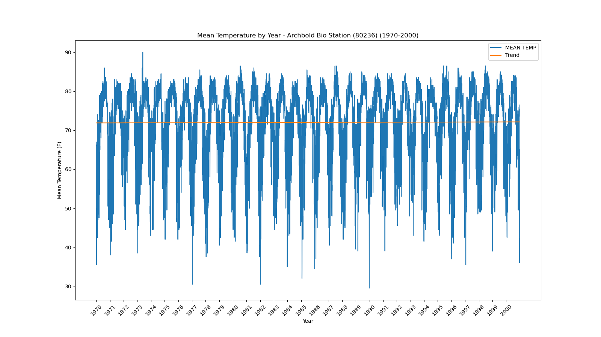</a></div>`)[0];
                popup_e79b688bde772a4128ffd8af97c0da8c.setContent(html_24f2cfa45d7e70f2b0497ddeab2724de);
            
        

        marker_c788e7d95987ab9972e1b99dad1b7985.bindPopup(popup_e79b688bde772a4128ffd8af97c0da8c)
        ;

        
    
    
            var marker_a705651c98a775dcea047a491bd4505f = L.marker(
                [27.59, -81.53],
                {}
            ).addTo(map_912e56754309b14fe6e2504616cc0d85);
        
    
            var icon_8829fce3697f5466386510b55610edc9 = L.AwesomeMarkers.icon(
                {"extraClasses": "fa-rotate-0", "icon": "info-sign", "iconColor": "white", "markerColor": "blue", "prefix": "glyphicon"}
            );
            marker_a705651c98a775dcea047a491bd4505f.setIcon(icon_8829fce3697f5466386510b55610edc9);
        
    
        var popup_845e3b4a003d9412272675e014e4fd7a = L.popup({"maxWidth": 1000, "minWidth": 500});

        
            
                var html_2aa0eb509bc618607bd29f5ae0a6a50a = $(`<div id="html_2aa0eb509bc618607bd29f5ae0a6a50a" style="width: 100.0%; height: 100.0%;"><b>Avon Park 2 W (80369)</b><br>lat: 27.59, lon: -81.53<br><a href='../../static/img/plots/timeseries/meantemp_daily/80369_1970-2000.png' target='_BLANK'></a></div>`)[0];
                popup_845e3b4a003d9412272675e014e4fd7a.setContent(html_2aa0eb509bc618607bd29f5ae0a6a50a);
            
        

        marker_a705651c98a775dcea047a491bd4505f.bindPopup(popup_845e3b4a003d9412272675e014e4fd7a)
        ;

        
    
    
            var marker_750dadc2d1c9da1b555624627dd120a3 = L.marker(
                [27.95, -81.79],
                {}
            ).addTo(map_912e56754309b14fe6e2504616cc0d85);
        
    
            var icon_5dd231f00b9e19633ef348e86c33a604 = L.AwesomeMarkers.icon(
                {"extraClasses": "fa-rotate-0", "icon": "info-sign", "iconColor": "white", "markerColor": "orange", "prefix": "glyphicon"}
            );
            marker_750dadc2d1c9da1b555624627dd120a3.setIcon(icon_5dd231f00b9e19633ef348e86c33a604);
        
    
        var popup_acc3967b1ffbf32bb57b2b28730707ba = L.popup({"maxWidth": 1000, "minWidth": 500});

        
            
                var html_146bc2d4de00e075674491a01b3d4365 = $(`<div id="html_146bc2d4de00e075674491a01b3d4365" style="width: 100.0%; height: 100.0%;"><b>Bartow (80478)</b><br>lat: 27.95, lon: -81.79<br><a href='../../static/img/plots/timeseries/meantemp_daily/80478_1970-2000.png' target='_BLANK'>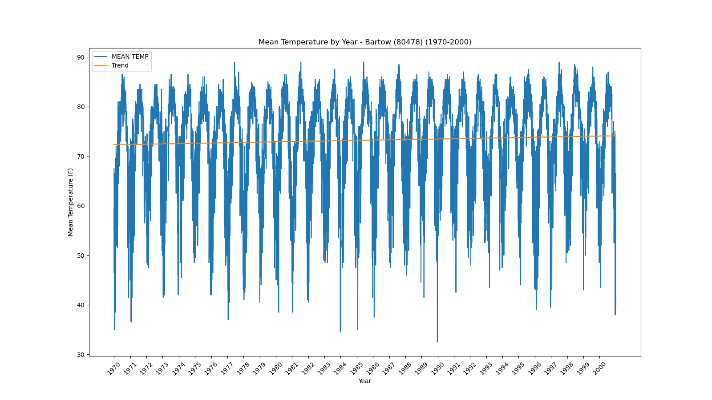</a></div>`)[0];
                popup_acc3967b1ffbf32bb57b2b28730707ba.setContent(html_146bc2d4de00e075674491a01b3d4365);
            
        

        marker_750dadc2d1c9da1b555624627dd120a3.bindPopup(popup_acc3967b1ffbf32bb57b2b28730707ba)
        ;

        
    
    
            var marker_68bfcac3330ee52bd12db591cbbc6834 = L.marker(
                [26.7, -80.66],
                {}
            ).addTo(map_912e56754309b14fe6e2504616cc0d85);
        
    
            var icon_2c36eb38326dc7ef35a352ca8e404e8a = L.AwesomeMarkers.icon(
                {"extraClasses": "fa-rotate-0", "icon": "info-sign", "iconColor": "white", "markerColor": "orange", "prefix": "glyphicon"}
            );
            marker_68bfcac3330ee52bd12db591cbbc6834.setIcon(icon_2c36eb38326dc7ef35a352ca8e404e8a);
        
    
        var popup_ee42c5b36394a1092395c5fe4192054a = L.popup({"maxWidth": 1000, "minWidth": 500});

        
            
                var html_8ff3ad7bb181ae908e5af6dabfb2f173 = $(`<div id="html_8ff3ad7bb181ae908e5af6dabfb2f173" style="width: 100.0%; height: 100.0%;"><b>Belle Glade Airport (80611)</b><br>lat: 26.7, lon: -80.66<br><a href='../../static/img/plots/timeseries/meantemp_daily/80611_1970-2000.png' target='_BLANK'></a></div>`)[0];
                popup_ee42c5b36394a1092395c5fe4192054a.setContent(html_8ff3ad7bb181ae908e5af6dabfb2f173);
            
        

        marker_68bfcac3330ee52bd12db591cbbc6834.bindPopup(popup_ee42c5b36394a1092395c5fe4192054a)
        ;

        
    
    
            var marker_431599abbdd99b150aa5f804c190d800 = L.marker(
                [27.5, -82.57],
                {}
            ).addTo(map_912e56754309b14fe6e2504616cc0d85);
        
    
            var icon_2dbc01538033e4d27f2b21ecedf4c78b = L.AwesomeMarkers.icon(
                {"extraClasses": "fa-rotate-0", "icon": "info-sign", "iconColor": "white", "markerColor": "orange", "prefix": "glyphicon"}
            );
            marker_431599abbdd99b150aa5f804c190d800.setIcon(icon_2dbc01538033e4d27f2b21ecedf4c78b);
        
    
        var popup_f98056f6d8c3c2b19d760c1ee29e4d38 = L.popup({"maxWidth": 1000, "minWidth": 500});

        
            
                var html_d039531feb77fbc6c1af56e316eb14b3 = $(`<div id="html_d039531feb77fbc6c1af56e316eb14b3" style="width: 100.0%; height: 100.0%;"><b>Bradenton 5 ESE (80945)</b><br>lat: 27.5, lon: -82.57<br><a href='../../static/img/plots/timeseries/meantemp_daily/80945_1970-2000.png' target='_BLANK'></a></div>`)[0];
                popup_f98056f6d8c3c2b19d760c1ee29e4d38.setContent(html_d039531feb77fbc6c1af56e316eb14b3);
            
        

        marker_431599abbdd99b150aa5f804c190d800.bindPopup(popup_f98056f6d8c3c2b19d760c1ee29e4d38)
        ;

        
    
    
            var marker_cf1f4b9603361290e424a826cc1330a6 = L.marker(
                [28.62, -82.37],
                {}
            ).addTo(map_912e56754309b14fe6e2504616cc0d85);
        
    
            var icon_d2eb8c151cad7926978e5d76c0e0b216 = L.AwesomeMarkers.icon(
                {"extraClasses": "fa-rotate-0", "icon": "info-sign", "iconColor": "white", "markerColor": "orange", "prefix": "glyphicon"}
            );
            marker_cf1f4b9603361290e424a826cc1330a6.setIcon(icon_d2eb8c151cad7926978e5d76c0e0b216);
        
    
        var popup_7f213304c311d1da996e6e7e21c697a0 = L.popup({"maxWidth": 1000, "minWidth": 500});

        
            
                var html_9a12f9a45847b0ec8b90dc7725c2eabe = $(`<div id="html_9a12f9a45847b0ec8b90dc7725c2eabe" style="width: 100.0%; height: 100.0%;"><b>Chinsegut Hill (81046)</b><br>lat: 28.62, lon: -82.37<br><a href='../../static/img/plots/timeseries/meantemp_daily/81046_1970-2000.png' target='_BLANK'></a></div>`)[0];
                popup_7f213304c311d1da996e6e7e21c697a0.setContent(html_9a12f9a45847b0ec8b90dc7725c2eabe);
            
        

        marker_cf1f4b9603361290e424a826cc1330a6.bindPopup(popup_7f213304c311d1da996e6e7e21c697a0)
        ;

        
    
    
            var marker_d226790d1cb91107cb5675ad07eb689c = L.marker(
                [28.66, -82.11],
                {}
            ).addTo(map_912e56754309b14fe6e2504616cc0d85);
        
    
            var icon_447d38a7c7622e5363bf112a4f9331aa = L.AwesomeMarkers.icon(
                {"extraClasses": "fa-rotate-0", "icon": "info-sign", "iconColor": "white", "markerColor": "orange", "prefix": "glyphicon"}
            );
            marker_d226790d1cb91107cb5675ad07eb689c.setIcon(icon_447d38a7c7622e5363bf112a4f9331aa);
        
    
        var popup_5f7c6d71e7cf1edc9920f4de0dd6995a = L.popup({"maxWidth": 1000, "minWidth": 500});

        
            
                var html_90faacac8292167598df154e24fdb39b = $(`<div id="html_90faacac8292167598df154e24fdb39b" style="width: 100.0%; height: 100.0%;"><b>Bushnell 1 E (81163)</b><br>lat: 28.66, lon: -82.11<br><a href='../../static/img/plots/timeseries/meantemp_daily/81163_1970-2000.png' target='_BLANK'>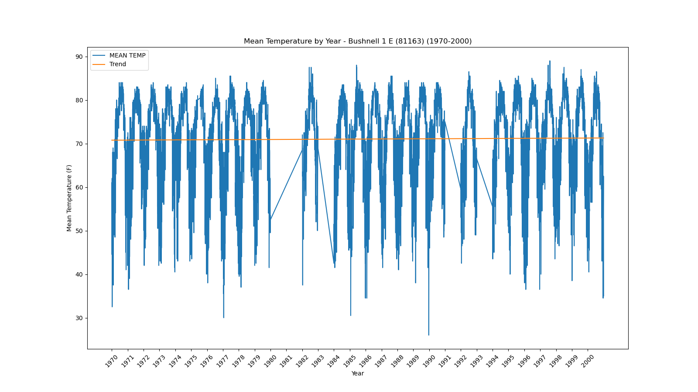</a></div>`)[0];
                popup_5f7c6d71e7cf1edc9920f4de0dd6995a.setContent(html_90faacac8292167598df154e24fdb39b);
            
        

        marker_d226790d1cb91107cb5675ad07eb689c.bindPopup(popup_5f7c6d71e7cf1edc9920f4de0dd6995a)
        ;

        
    
    
            var marker_b397c59abe869bb540cb470c299ef960 = L.marker(
                [26.86, -80.63],
                {}
            ).addTo(map_912e56754309b14fe6e2504616cc0d85);
        
    
            var icon_36e68a16bf565602e404913817f26763 = L.AwesomeMarkers.icon(
                {"extraClasses": "fa-rotate-0", "icon": "info-sign", "iconColor": "white", "markerColor": "orange", "prefix": "glyphicon"}
            );
            marker_b397c59abe869bb540cb470c299ef960.setIcon(icon_36e68a16bf565602e404913817f26763);
        
    
        var popup_8caea0659ae70a28e6f6d26bfae6b027 = L.popup({"maxWidth": 1000, "minWidth": 500});

        
            
                var html_0749376b8a626cef68d9b596fc64d35c = $(`<div id="html_0749376b8a626cef68d9b596fc64d35c" style="width: 100.0%; height: 100.0%;"><b>Canal Point (81276)</b><br>lat: 26.86, lon: -80.63<br><a href='../../static/img/plots/timeseries/meantemp_daily/81276_1970-2000.png' target='_BLANK'></a></div>`)[0];
                popup_8caea0659ae70a28e6f6d26bfae6b027.setContent(html_0749376b8a626cef68d9b596fc64d35c);
            
        

        marker_b397c59abe869bb540cb470c299ef960.bindPopup(popup_8caea0659ae70a28e6f6d26bfae6b027)
        ;

        
    
    
            var marker_f441cfc741bfd21b0414587aefff0c67 = L.marker(
                [30.78, -85.54],
                {}
            ).addTo(map_912e56754309b14fe6e2504616cc0d85);
        
    
            var icon_10b2b4662948ad708fe3a83b11c06433 = L.AwesomeMarkers.icon(
                {"extraClasses": "fa-rotate-0", "icon": "info-sign", "iconColor": "white", "markerColor": "orange", "prefix": "glyphicon"}
            );
            marker_f441cfc741bfd21b0414587aefff0c67.setIcon(icon_10b2b4662948ad708fe3a83b11c06433);
        
    
        var popup_83c3c4b171f6f2b04ef67a6a2ac8eede = L.popup({"maxWidth": 1000, "minWidth": 500});

        
            
                var html_a71ea5f31d317c1710d1f219e07433cd = $(`<div id="html_a71ea5f31d317c1710d1f219e07433cd" style="width: 100.0%; height: 100.0%;"><b>Chipley (81544)</b><br>lat: 30.78, lon: -85.54<br><a href='../../static/img/plots/timeseries/meantemp_daily/81544_1970-2000.png' target='_BLANK'></a></div>`)[0];
                popup_83c3c4b171f6f2b04ef67a6a2ac8eede.setContent(html_a71ea5f31d317c1710d1f219e07433cd);
            
        

        marker_f441cfc741bfd21b0414587aefff0c67.bindPopup(popup_83c3c4b171f6f2b04ef67a6a2ac8eede)
        ;

        
    
    
            var marker_b14d8589623cfcdb816fe04c8de59fa6 = L.marker(
                [28.56, -81.77],
                {}
            ).addTo(map_912e56754309b14fe6e2504616cc0d85);
        
    
            var icon_321e3bfae4bffbe83079329426a385dd = L.AwesomeMarkers.icon(
                {"extraClasses": "fa-rotate-0", "icon": "info-sign", "iconColor": "white", "markerColor": "blue", "prefix": "glyphicon"}
            );
            marker_b14d8589623cfcdb816fe04c8de59fa6.setIcon(icon_321e3bfae4bffbe83079329426a385dd);
        
    
        var popup_deb1c4b68bc36975aed1e839e5d972bb = L.popup({"maxWidth": 1000, "minWidth": 500});

        
            
                var html_41a92676fb72a41fff58a0e6a267b8fc = $(`<div id="html_41a92676fb72a41fff58a0e6a267b8fc" style="width: 100.0%; height: 100.0%;"><b>Clermont 9 S (81641)</b><br>lat: 28.56, lon: -81.77<br><a href='../../static/img/plots/timeseries/meantemp_daily/81641_1970-2000.png' target='_BLANK'>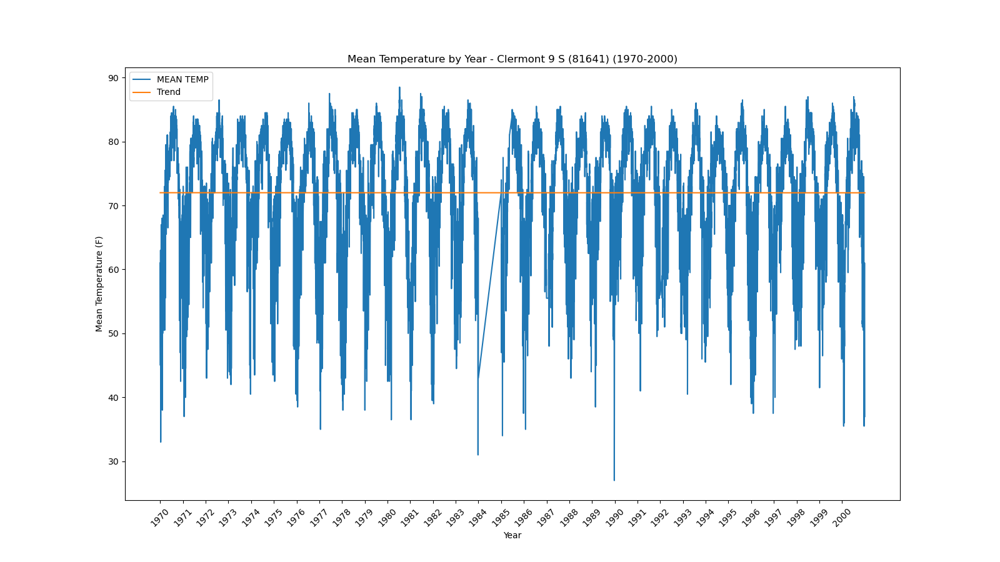</a></div>`)[0];
                popup_deb1c4b68bc36975aed1e839e5d972bb.setContent(html_41a92676fb72a41fff58a0e6a267b8fc);
            
        

        marker_b14d8589623cfcdb816fe04c8de59fa6.bindPopup(popup_deb1c4b68bc36975aed1e839e5d972bb)
        ;

        
    
    
            var marker_11219366f6cd1e1edf8d3645c15271e0 = L.marker(
                [29.43, -81.51],
                {}
            ).addTo(map_912e56754309b14fe6e2504616cc0d85);
        
    
            var icon_406cb105b05c8551829071949e858110 = L.AwesomeMarkers.icon(
                {"extraClasses": "fa-rotate-0", "icon": "info-sign", "iconColor": "white", "markerColor": "orange", "prefix": "glyphicon"}
            );
            marker_11219366f6cd1e1edf8d3645c15271e0.setIcon(icon_406cb105b05c8551829071949e858110);
        
    
        var popup_7a464522d42781ef11c39482baddf1bf = L.popup({"maxWidth": 1000, "minWidth": 500});

        
            
                var html_b709d2918db1855dbf1a5753d9490df6 = $(`<div id="html_b709d2918db1855dbf1a5753d9490df6" style="width: 100.0%; height: 100.0%;"><b>Crescent City (81978)</b><br>lat: 29.43, lon: -81.51<br><a href='../../static/img/plots/timeseries/meantemp_daily/81978_1970-2000.png' target='_BLANK'>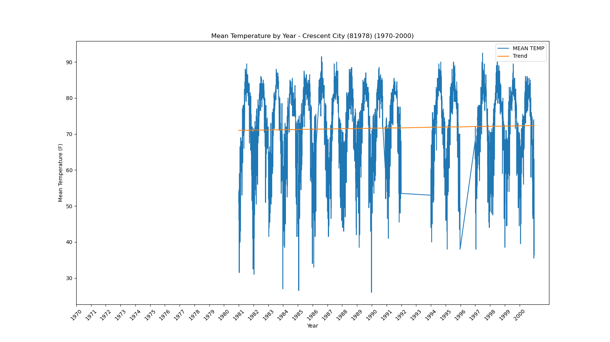</a></div>`)[0];
                popup_7a464522d42781ef11c39482baddf1bf.setContent(html_b709d2918db1855dbf1a5753d9490df6);
            
        

        marker_11219366f6cd1e1edf8d3645c15271e0.bindPopup(popup_7a464522d42781ef11c39482baddf1bf)
        ;

        
    
    
            var marker_bce9b6be898a7f5d8a66dfc81ce7cf87 = L.marker(
                [30.78, -86.52],
                {}
            ).addTo(map_912e56754309b14fe6e2504616cc0d85);
        
    
            var icon_45b963799e78217d1168e4f613742dd4 = L.AwesomeMarkers.icon(
                {"extraClasses": "fa-rotate-0", "icon": "info-sign", "iconColor": "white", "markerColor": "orange", "prefix": "glyphicon"}
            );
            marker_bce9b6be898a7f5d8a66dfc81ce7cf87.setIcon(icon_45b963799e78217d1168e4f613742dd4);
        
    
        var popup_44d3c1f0c8d78d0f131810047a7ea314 = L.popup({"maxWidth": 1000, "minWidth": 500});

        
            
                var html_07ba9ec68b3d3d812b106e9cadab5b6b = $(`<div id="html_07ba9ec68b3d3d812b106e9cadab5b6b" style="width: 100.0%; height: 100.0%;"><b>Crestview Bob Sikes Airport (81986)</b><br>lat: 30.78, lon: -86.52<br><a href='../../static/img/plots/timeseries/meantemp_daily/81986_1970-2000.png' target='_BLANK'></a></div>`)[0];
                popup_44d3c1f0c8d78d0f131810047a7ea314.setContent(html_07ba9ec68b3d3d812b106e9cadab5b6b);
            
        

        marker_bce9b6be898a7f5d8a66dfc81ce7cf87.bindPopup(popup_44d3c1f0c8d78d0f131810047a7ea314)
        ;

        
    
    
            var marker_b9732070ac1baa955843adb39903affe = L.marker(
                [29.63, -83.13],
                {}
            ).addTo(map_912e56754309b14fe6e2504616cc0d85);
        
    
            var icon_9b20c00b98a9d9b5b15c74710e458769 = L.AwesomeMarkers.icon(
                {"extraClasses": "fa-rotate-0", "icon": "info-sign", "iconColor": "white", "markerColor": "orange", "prefix": "glyphicon"}
            );
            marker_b9732070ac1baa955843adb39903affe.setIcon(icon_9b20c00b98a9d9b5b15c74710e458769);
        
    
        var popup_ef956a703c05b01a5bcfe697b8bd129f = L.popup({"maxWidth": 1000, "minWidth": 500});

        
            
                var html_a4cbfa8224ecbd5756297f46a1293c30 = $(`<div id="html_a4cbfa8224ecbd5756297f46a1293c30" style="width: 100.0%; height: 100.0%;"><b>Cross City 1 E (82008)</b><br>lat: 29.63, lon: -83.13<br><a href='../../static/img/plots/timeseries/meantemp_daily/82008_1970-2000.png' target='_BLANK'></a></div>`)[0];
                popup_ef956a703c05b01a5bcfe697b8bd129f.setContent(html_a4cbfa8224ecbd5756297f46a1293c30);
            
        

        marker_b9732070ac1baa955843adb39903affe.bindPopup(popup_ef956a703c05b01a5bcfe697b8bd129f)
        ;

        
    
    
            var marker_7b5c66ac0c116aa3a6b81a0217173572 = L.marker(
                [29.18, -81.06],
                {}
            ).addTo(map_912e56754309b14fe6e2504616cc0d85);
        
    
            var icon_baf8a02186242a0d3d0061bbe6ef755d = L.AwesomeMarkers.icon(
                {"extraClasses": "fa-rotate-0", "icon": "info-sign", "iconColor": "white", "markerColor": "orange", "prefix": "glyphicon"}
            );
            marker_7b5c66ac0c116aa3a6b81a0217173572.setIcon(icon_baf8a02186242a0d3d0061bbe6ef755d);
        
    
        var popup_a2715bf7de8f2f430421e60b7ca54b32 = L.popup({"maxWidth": 1000, "minWidth": 500});

        
            
                var html_2d4f0e48a972d6dcb1482112a9499756 = $(`<div id="html_2d4f0e48a972d6dcb1482112a9499756" style="width: 100.0%; height: 100.0%;"><b>Daytona Beach Intl Airport (82158)</b><br>lat: 29.18, lon: -81.06<br><a href='../../static/img/plots/timeseries/meantemp_daily/82158_1970-2000.png' target='_BLANK'>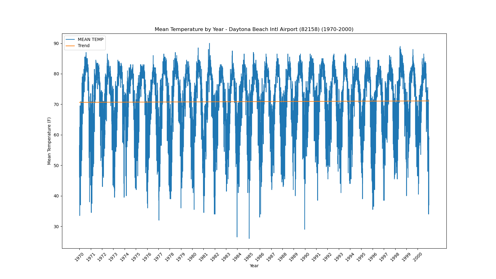</a></div>`)[0];
                popup_a2715bf7de8f2f430421e60b7ca54b32.setContent(html_2d4f0e48a972d6dcb1482112a9499756);
            
        

        marker_7b5c66ac0c116aa3a6b81a0217173572.bindPopup(popup_a2715bf7de8f2f430421e60b7ca54b32)
        ;

        
    
    
            var marker_b773415bd68c96d39bf8af2a20880b65 = L.marker(
                [30.72, -86.12],
                {}
            ).addTo(map_912e56754309b14fe6e2504616cc0d85);
        
    
            var icon_84a51cdc65a02c421ad4e9b09f3294d1 = L.AwesomeMarkers.icon(
                {"extraClasses": "fa-rotate-0", "icon": "info-sign", "iconColor": "white", "markerColor": "orange", "prefix": "glyphicon"}
            );
            marker_b773415bd68c96d39bf8af2a20880b65.setIcon(icon_84a51cdc65a02c421ad4e9b09f3294d1);
        
    
        var popup_9df38cca9c2f6171c80fff37907445f4 = L.popup({"maxWidth": 1000, "minWidth": 500});

        
            
                var html_45253933fecfe97574204367918dd507 = $(`<div id="html_45253933fecfe97574204367918dd507" style="width: 100.0%; height: 100.0%;"><b>De Funiak Springs 1 E (82220)</b><br>lat: 30.72, lon: -86.12<br><a href='../../static/img/plots/timeseries/meantemp_daily/82220_1970-2000.png' target='_BLANK'></a></div>`)[0];
                popup_9df38cca9c2f6171c80fff37907445f4.setContent(html_45253933fecfe97574204367918dd507);
            
        

        marker_b773415bd68c96d39bf8af2a20880b65.bindPopup(popup_9df38cca9c2f6171c80fff37907445f4)
        ;

        
    
    
            var marker_f9c6b00dbcb8f5e456346e6f64242118 = L.marker(
                [29.03, -81.3],
                {}
            ).addTo(map_912e56754309b14fe6e2504616cc0d85);
        
    
            var icon_3573225d5ffb6a88c968884da4e4bb12 = L.AwesomeMarkers.icon(
                {"extraClasses": "fa-rotate-0", "icon": "info-sign", "iconColor": "white", "markerColor": "orange", "prefix": "glyphicon"}
            );
            marker_f9c6b00dbcb8f5e456346e6f64242118.setIcon(icon_3573225d5ffb6a88c968884da4e4bb12);
        
    
        var popup_05d54b375e90dab4e819d535f93fd91d = L.popup({"maxWidth": 1000, "minWidth": 500});

        
            
                var html_3b51690bf8d398dfeff142bdba1dd820 = $(`<div id="html_3b51690bf8d398dfeff142bdba1dd820" style="width: 100.0%; height: 100.0%;"><b>Deland 1 SSE (82229)</b><br>lat: 29.03, lon: -81.3<br><a href='../../static/img/plots/timeseries/meantemp_daily/82229_1970-2000.png' target='_BLANK'></a></div>`)[0];
                popup_05d54b375e90dab4e819d535f93fd91d.setContent(html_3b51690bf8d398dfeff142bdba1dd820);
            
        

        marker_f9c6b00dbcb8f5e456346e6f64242118.bindPopup(popup_05d54b375e90dab4e819d535f93fd91d)
        ;

        
    
    
            var marker_6934c1aa1307138300c2438ff4f7307a = L.marker(
                [30.71, -85.72],
                {}
            ).addTo(map_912e56754309b14fe6e2504616cc0d85);
        
    
            var icon_b4f9ee735d28f79e6e8952036684f716 = L.AwesomeMarkers.icon(
                {"extraClasses": "fa-rotate-0", "icon": "info-sign", "iconColor": "white", "markerColor": "orange", "prefix": "glyphicon"}
            );
            marker_6934c1aa1307138300c2438ff4f7307a.setIcon(icon_b4f9ee735d28f79e6e8952036684f716);
        
    
        var popup_15acef097130af78ff678d4e2462a2a2 = L.popup({"maxWidth": 1000, "minWidth": 500});

        
            
                var html_09961e0d074a95b4b822c3bc937d3a31 = $(`<div id="html_09961e0d074a95b4b822c3bc937d3a31" style="width: 100.0%; height: 100.0%;"><b>Devils Garden (82298)</b><br>lat: 30.71, lon: -85.72<br><a href='../../static/img/plots/timeseries/meantemp_daily/82298_1970-2000.png' target='_BLANK'>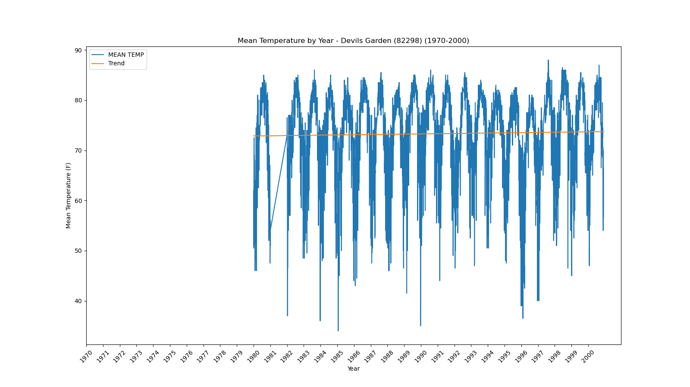</a></div>`)[0];
                popup_15acef097130af78ff678d4e2462a2a2.setContent(html_09961e0d074a95b4b822c3bc937d3a31);
            
        

        marker_6934c1aa1307138300c2438ff4f7307a.bindPopup(popup_15acef097130af78ff678d4e2462a2a2)
        ;

        
    
    
            var marker_95d96ff830ab86f5e8fa227df9698793 = L.marker(
                [25.29, -80.89],
                {}
            ).addTo(map_912e56754309b14fe6e2504616cc0d85);
        
    
            var icon_525d6f80358d8f5926ae718eeddd3bcb = L.AwesomeMarkers.icon(
                {"extraClasses": "fa-rotate-0", "icon": "info-sign", "iconColor": "white", "markerColor": "orange", "prefix": "glyphicon"}
            );
            marker_95d96ff830ab86f5e8fa227df9698793.setIcon(icon_525d6f80358d8f5926ae718eeddd3bcb);
        
    
        var popup_b00c9faf7e2ffab0ac3c201a711c06a5 = L.popup({"maxWidth": 1000, "minWidth": 500});

        
            
                var html_15f5af5ce710cd5ee0a40004b4df9654 = $(`<div id="html_15f5af5ce710cd5ee0a40004b4df9654" style="width: 100.0%; height: 100.0%;"><b>Everglades (82850)</b><br>lat: 25.29, lon: -80.89<br><a href='../../static/img/plots/timeseries/meantemp_daily/82850_1970-2000.png' target='_BLANK'></a></div>`)[0];
                popup_b00c9faf7e2ffab0ac3c201a711c06a5.setContent(html_15f5af5ce710cd5ee0a40004b4df9654);
            
        

        marker_95d96ff830ab86f5e8fa227df9698793.bindPopup(popup_b00c9faf7e2ffab0ac3c201a711c06a5)
        ;

        
    
    
            var marker_a2e07a342bce9128fcdb39369b8b3b00 = L.marker(
                [29.75, -81.54],
                {}
            ).addTo(map_912e56754309b14fe6e2504616cc0d85);
        
    
            var icon_6dd83a3dd9b68d47cc8f8b30b78e24c0 = L.AwesomeMarkers.icon(
                {"extraClasses": "fa-rotate-0", "icon": "info-sign", "iconColor": "white", "markerColor": "orange", "prefix": "glyphicon"}
            );
            marker_a2e07a342bce9128fcdb39369b8b3b00.setIcon(icon_6dd83a3dd9b68d47cc8f8b30b78e24c0);
        
    
        var popup_0972279e56d561a3487de651cce4a0b9 = L.popup({"maxWidth": 1000, "minWidth": 500});

        
            
                var html_5a5d4b7167bc1cb28265b4d0547c4d8a = $(`<div id="html_5a5d4b7167bc1cb28265b4d0547c4d8a" style="width: 100.0%; height: 100.0%;"><b>Federal Point (82915)</b><br>lat: 29.75, lon: -81.54<br><a href='../../static/img/plots/timeseries/meantemp_daily/82915_1970-2000.png' target='_BLANK'>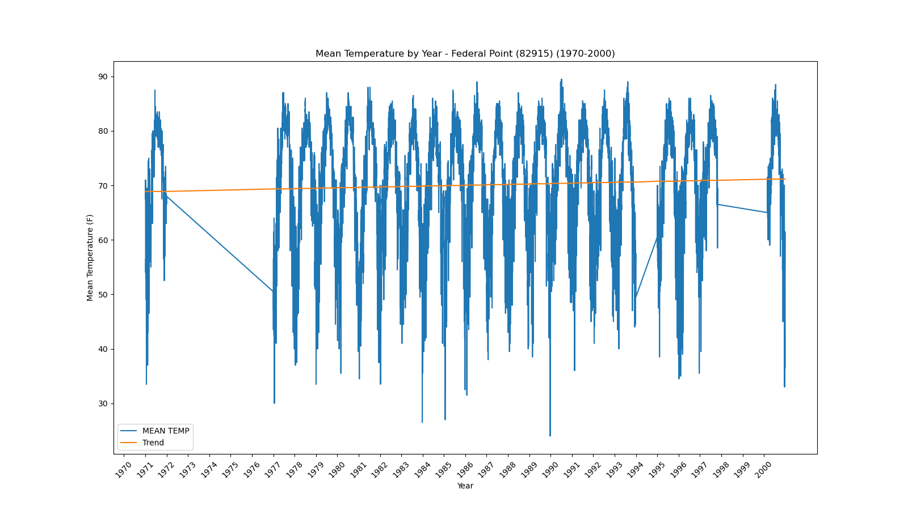</a></div>`)[0];
                popup_0972279e56d561a3487de651cce4a0b9.setContent(html_5a5d4b7167bc1cb28265b4d0547c4d8a);
            
        

        marker_a2e07a342bce9128fcdb39369b8b3b00.bindPopup(popup_0972279e56d561a3487de651cce4a0b9)
        ;

        
    
    
            var marker_405e510698e4ab8b07d29025718f0bf7 = L.marker(
                [30.62, -81.46],
                {}
            ).addTo(map_912e56754309b14fe6e2504616cc0d85);
        
    
            var icon_050cdf3637c08ba695836b1c12062d20 = L.AwesomeMarkers.icon(
                {"extraClasses": "fa-rotate-0", "icon": "info-sign", "iconColor": "white", "markerColor": "orange", "prefix": "glyphicon"}
            );
            marker_405e510698e4ab8b07d29025718f0bf7.setIcon(icon_050cdf3637c08ba695836b1c12062d20);
        
    
        var popup_4e17a9a5e18eba3874e50fb7808f53d1 = L.popup({"maxWidth": 1000, "minWidth": 500});

        
            
                var html_6ea3fd5f5c204ecf2393256891e88393 = $(`<div id="html_6ea3fd5f5c204ecf2393256891e88393" style="width: 100.0%; height: 100.0%;"><b>Fernandina Beach (82944)</b><br>lat: 30.62, lon: -81.46<br><a href='../../static/img/plots/timeseries/meantemp_daily/82944_1970-2000.png' target='_BLANK'></a></div>`)[0];
                popup_4e17a9a5e18eba3874e50fb7808f53d1.setContent(html_6ea3fd5f5c204ecf2393256891e88393);
            
        

        marker_405e510698e4ab8b07d29025718f0bf7.bindPopup(popup_4e17a9a5e18eba3874e50fb7808f53d1)
        ;

        
    
    
            var marker_2695eef78ae9a04d10d987ffbf50b89c = L.marker(
                [25.14, -80.93],
                {}
            ).addTo(map_912e56754309b14fe6e2504616cc0d85);
        
    
            var icon_76cd47fd5140ba3f1e0101f082ed9b60 = L.AwesomeMarkers.icon(
                {"extraClasses": "fa-rotate-0", "icon": "info-sign", "iconColor": "white", "markerColor": "orange", "prefix": "glyphicon"}
            );
            marker_2695eef78ae9a04d10d987ffbf50b89c.setIcon(icon_76cd47fd5140ba3f1e0101f082ed9b60);
        
    
        var popup_f8077164937c2b8c6ded41e4c5555071 = L.popup({"maxWidth": 1000, "minWidth": 500});

        
            
                var html_751ac37956468b1aca989166874b2e8b = $(`<div id="html_751ac37956468b1aca989166874b2e8b" style="width: 100.0%; height: 100.0%;"><b>Flamingo Ranger Station (83020)</b><br>lat: 25.14, lon: -80.93<br><a href='../../static/img/plots/timeseries/meantemp_daily/83020_1970-2000.png' target='_BLANK'>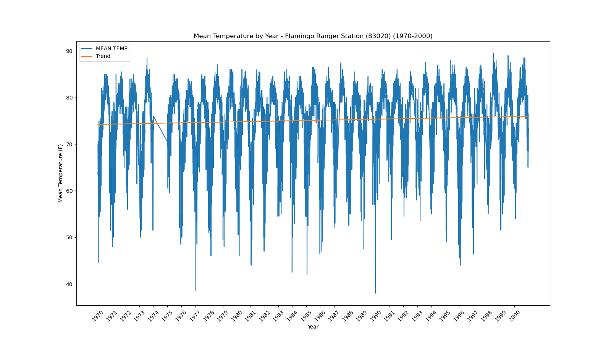</a></div>`)[0];
                popup_f8077164937c2b8c6ded41e4c5555071.setContent(html_751ac37956468b1aca989166874b2e8b);
            
        

        marker_2695eef78ae9a04d10d987ffbf50b89c.bindPopup(popup_f8077164937c2b8c6ded41e4c5555071)
        ;

        
    
    
            var marker_cbe50c6a278638ebbe8d0544dbd7d919 = L.marker(
                [27.53, -80.81],
                {}
            ).addTo(map_912e56754309b14fe6e2504616cc0d85);
        
    
            var icon_7a4f2169b0eb17c9c1307603d9f63279 = L.AwesomeMarkers.icon(
                {"extraClasses": "fa-rotate-0", "icon": "info-sign", "iconColor": "white", "markerColor": "orange", "prefix": "glyphicon"}
            );
            marker_cbe50c6a278638ebbe8d0544dbd7d919.setIcon(icon_7a4f2169b0eb17c9c1307603d9f63279);
        
    
        var popup_9ad0869a177cbb9bb03a104f8aa12731 = L.popup({"maxWidth": 1000, "minWidth": 500});

        
            
                var html_803923bf8b0c948a33d60cdf49e18ab9 = $(`<div id="html_803923bf8b0c948a33d60cdf49e18ab9" style="width: 100.0%; height: 100.0%;"><b>Fort Drum (83137)</b><br>lat: 27.53, lon: -80.81<br><a href='../../static/img/plots/timeseries/meantemp_daily/83137_1970-2000.png' target='_BLANK'></a></div>`)[0];
                popup_9ad0869a177cbb9bb03a104f8aa12731.setContent(html_803923bf8b0c948a33d60cdf49e18ab9);
            
        

        marker_cbe50c6a278638ebbe8d0544dbd7d919.bindPopup(popup_9ad0869a177cbb9bb03a104f8aa12731)
        ;

        
    
    
            var marker_3fa2973067514d8680a236e69961ee3e = L.marker(
                [26.07, -80.15],
                {}
            ).addTo(map_912e56754309b14fe6e2504616cc0d85);
        
    
            var icon_5dbf7abe077b5b5db708fc3d488f0206 = L.AwesomeMarkers.icon(
                {"extraClasses": "fa-rotate-0", "icon": "info-sign", "iconColor": "white", "markerColor": "orange", "prefix": "glyphicon"}
            );
            marker_3fa2973067514d8680a236e69961ee3e.setIcon(icon_5dbf7abe077b5b5db708fc3d488f0206);
        
    
        var popup_48e3143456072c57de249980067dc871 = L.popup({"maxWidth": 1000, "minWidth": 500});

        
            
                var html_de410c4740c753ce3d2765c94773e276 = $(`<div id="html_de410c4740c753ce3d2765c94773e276" style="width: 100.0%; height: 100.0%;"><b>Ft Lauderdale (83163)</b><br>lat: 26.07, lon: -80.15<br><a href='../../static/img/plots/timeseries/meantemp_daily/83163_1970-2000.png' target='_BLANK'></a></div>`)[0];
                popup_48e3143456072c57de249980067dc871.setContent(html_de410c4740c753ce3d2765c94773e276);
            
        

        marker_3fa2973067514d8680a236e69961ee3e.bindPopup(popup_48e3143456072c57de249980067dc871)
        ;

        
    
    
            var marker_d871df048db071fdb6d0b7d450bebdce = L.marker(
                [26.13, -80.11],
                {}
            ).addTo(map_912e56754309b14fe6e2504616cc0d85);
        
    
            var icon_1eeb45667887813469b0f8b5ec3b0e81 = L.AwesomeMarkers.icon(
                {"extraClasses": "fa-rotate-0", "icon": "info-sign", "iconColor": "white", "markerColor": "blue", "prefix": "glyphicon"}
            );
            marker_d871df048db071fdb6d0b7d450bebdce.setIcon(icon_1eeb45667887813469b0f8b5ec3b0e81);
        
    
        var popup_ad864df3672f51023abcdb81497f232a = L.popup({"maxWidth": 1000, "minWidth": 500});

        
            
                var html_9a9f3beaa9459897f9599a344099b661 = $(`<div id="html_9a9f3beaa9459897f9599a344099b661" style="width: 100.0%; height: 100.0%;"><b>Ft Lauderdale Beach (83168)</b><br>lat: 26.13, lon: -80.11<br><a href='../../static/img/plots/timeseries/meantemp_daily/83168_1970-2000.png' target='_BLANK'>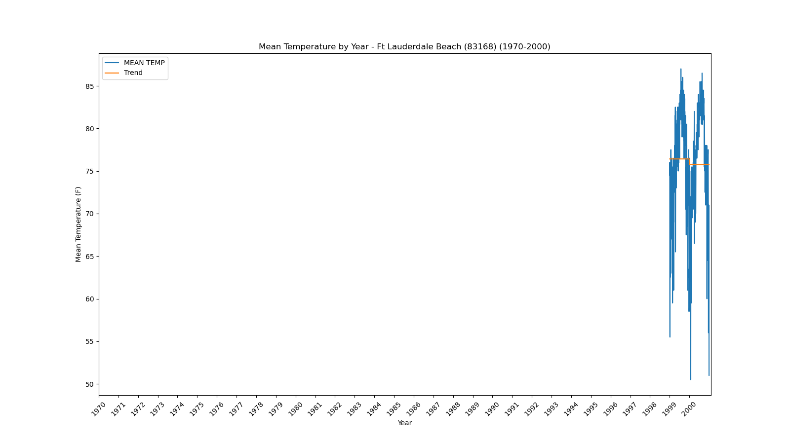</a></div>`)[0];
                popup_ad864df3672f51023abcdb81497f232a.setContent(html_9a9f3beaa9459897f9599a344099b661);
            
        

        marker_d871df048db071fdb6d0b7d450bebdce.bindPopup(popup_ad864df3672f51023abcdb81497f232a)
        ;

        
    
    
            var marker_925388e43806d20fcfd5c7145dcc6365 = L.marker(
                [26.59, -81.87],
                {}
            ).addTo(map_912e56754309b14fe6e2504616cc0d85);
        
    
            var icon_1d18e1468cf05d005462d8cb9d21740b = L.AwesomeMarkers.icon(
                {"extraClasses": "fa-rotate-0", "icon": "info-sign", "iconColor": "white", "markerColor": "orange", "prefix": "glyphicon"}
            );
            marker_925388e43806d20fcfd5c7145dcc6365.setIcon(icon_1d18e1468cf05d005462d8cb9d21740b);
        
    
        var popup_dc191a227001d62ea110178d394f7c4f = L.popup({"maxWidth": 1000, "minWidth": 500});

        
            
                var html_b28c0018b7d794737e46f0157927825d = $(`<div id="html_b28c0018b7d794737e46f0157927825d" style="width: 100.0%; height: 100.0%;"><b>Fort Myers Page Field Airport (83186)</b><br>lat: 26.59, lon: -81.87<br><a href='../../static/img/plots/timeseries/meantemp_daily/83186_1970-2000.png' target='_BLANK'>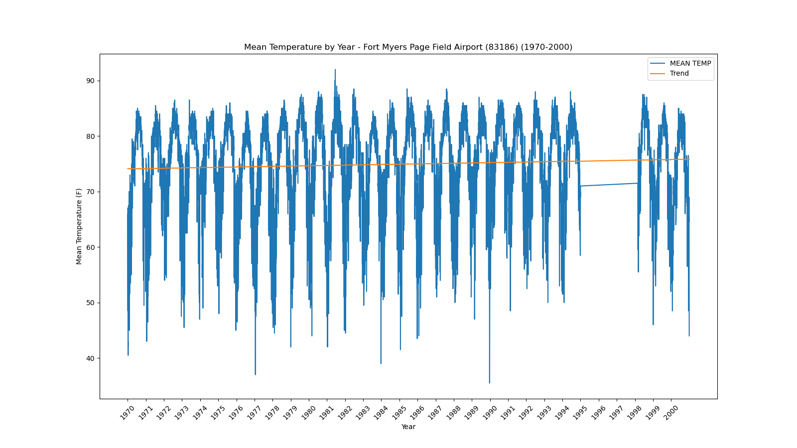</a></div>`)[0];
                popup_dc191a227001d62ea110178d394f7c4f.setContent(html_b28c0018b7d794737e46f0157927825d);
            
        

        marker_925388e43806d20fcfd5c7145dcc6365.bindPopup(popup_dc191a227001d62ea110178d394f7c4f)
        ;

        
    
    
            var marker_9e533d328de33d0967f562649ccdc033 = L.marker(
                [27.44, -80.34],
                {}
            ).addTo(map_912e56754309b14fe6e2504616cc0d85);
        
    
            var icon_768fc46271ddc1fa6645ba0e109d6590 = L.AwesomeMarkers.icon(
                {"extraClasses": "fa-rotate-0", "icon": "info-sign", "iconColor": "white", "markerColor": "orange", "prefix": "glyphicon"}
            );
            marker_9e533d328de33d0967f562649ccdc033.setIcon(icon_768fc46271ddc1fa6645ba0e109d6590);
        
    
        var popup_0569c458154cc6afa794e70b9368497f = L.popup({"maxWidth": 1000, "minWidth": 500});

        
            
                var html_0319de5c90a171d9d64f6d0b1926b786 = $(`<div id="html_0319de5c90a171d9d64f6d0b1926b786" style="width: 100.0%; height: 100.0%;"><b>Fort Pierce (83207)</b><br>lat: 27.44, lon: -80.34<br><a href='../../static/img/plots/timeseries/meantemp_daily/83207_1970-2000.png' target='_BLANK'></a></div>`)[0];
                popup_0569c458154cc6afa794e70b9368497f.setContent(html_0319de5c90a171d9d64f6d0b1926b786);
            
        

        marker_9e533d328de33d0967f562649ccdc033.bindPopup(popup_0569c458154cc6afa794e70b9368497f)
        ;

        
    
    
            var marker_a1a3d2bacb81309f010fc9ed95e6f061 = L.marker(
                [29.69, -82.28],
                {}
            ).addTo(map_912e56754309b14fe6e2504616cc0d85);
        
    
            var icon_fc265cb202f4b0a40e294f0a759963cf = L.AwesomeMarkers.icon(
                {"extraClasses": "fa-rotate-0", "icon": "info-sign", "iconColor": "white", "markerColor": "orange", "prefix": "glyphicon"}
            );
            marker_a1a3d2bacb81309f010fc9ed95e6f061.setIcon(icon_fc265cb202f4b0a40e294f0a759963cf);
        
    
        var popup_a9aa4d2845a508018c4fda86c2cd1a32 = L.popup({"maxWidth": 1000, "minWidth": 500});

        
            
                var html_861afc51dce8467385317cdaa095af34 = $(`<div id="html_861afc51dce8467385317cdaa095af34" style="width: 100.0%; height: 100.0%;"><b>Gainesville Regional Airport (83326)</b><br>lat: 29.69, lon: -82.28<br><a href='../../static/img/plots/timeseries/meantemp_daily/83326_1970-2000.png' target='_BLANK'>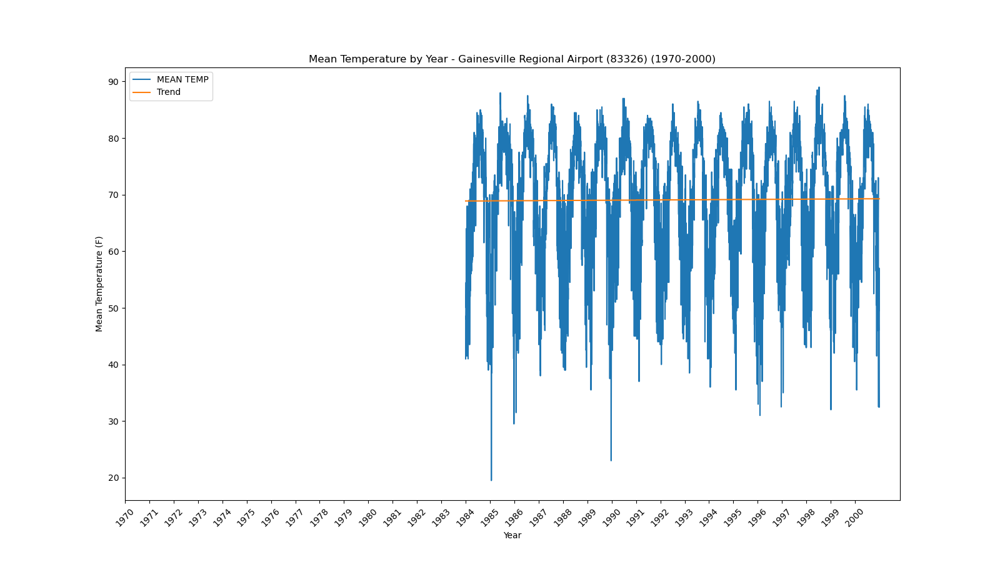</a></div>`)[0];
                popup_a9aa4d2845a508018c4fda86c2cd1a32.setContent(html_861afc51dce8467385317cdaa095af34);
            
        

        marker_a1a3d2bacb81309f010fc9ed95e6f061.bindPopup(popup_a9aa4d2845a508018c4fda86c2cd1a32)
        ;

        
    
    
            var marker_f9ff93022249047d67f00218e4515f2c = L.marker(
                [30.28, -82.16],
                {}
            ).addTo(map_912e56754309b14fe6e2504616cc0d85);
        
    
            var icon_7883fd0630d8f1ab337ee793ec83cebc = L.AwesomeMarkers.icon(
                {"extraClasses": "fa-rotate-0", "icon": "info-sign", "iconColor": "white", "markerColor": "blue", "prefix": "glyphicon"}
            );
            marker_f9ff93022249047d67f00218e4515f2c.setIcon(icon_7883fd0630d8f1ab337ee793ec83cebc);
        
    
        var popup_6f3657cd7e78cf4d389a6bb02b5314a8 = L.popup({"maxWidth": 1000, "minWidth": 500});

        
            
                var html_8955b8227963dcdd437659223adc2a1f = $(`<div id="html_8955b8227963dcdd437659223adc2a1f" style="width: 100.0%; height: 100.0%;"><b>Glen St Mary 1 W (83470)</b><br>lat: 30.28, lon: -82.16<br><a href='../../static/img/plots/timeseries/meantemp_daily/83470_1970-2000.png' target='_BLANK'></a></div>`)[0];
                popup_6f3657cd7e78cf4d389a6bb02b5314a8.setContent(html_8955b8227963dcdd437659223adc2a1f);
            
        

        marker_f9ff93022249047d67f00218e4515f2c.bindPopup(popup_6f3657cd7e78cf4d389a6bb02b5314a8)
        ;

        
    
    
            var marker_de60ecd5eb64e4194d0eb28d366a6aa8 = L.marker(
                [29.72, -81.51],
                {}
            ).addTo(map_912e56754309b14fe6e2504616cc0d85);
        
    
            var icon_7da58b7f255c28beeeaefdb29d02a8d8 = L.AwesomeMarkers.icon(
                {"extraClasses": "fa-rotate-0", "icon": "info-sign", "iconColor": "white", "markerColor": "orange", "prefix": "glyphicon"}
            );
            marker_de60ecd5eb64e4194d0eb28d366a6aa8.setIcon(icon_7da58b7f255c28beeeaefdb29d02a8d8);
        
    
        var popup_82f1b9e619cf1b5538247d30ee0ea5e1 = L.popup({"maxWidth": 1000, "minWidth": 500});

        
            
                var html_5c1ce772a214e0664606bee6f30b5aa5 = $(`<div id="html_5c1ce772a214e0664606bee6f30b5aa5" style="width: 100.0%; height: 100.0%;"><b>Hastings 4 NE (83874)</b><br>lat: 29.72, lon: -81.51<br><a href='../../static/img/plots/timeseries/meantemp_daily/83874_1970-2000.png' target='_BLANK'>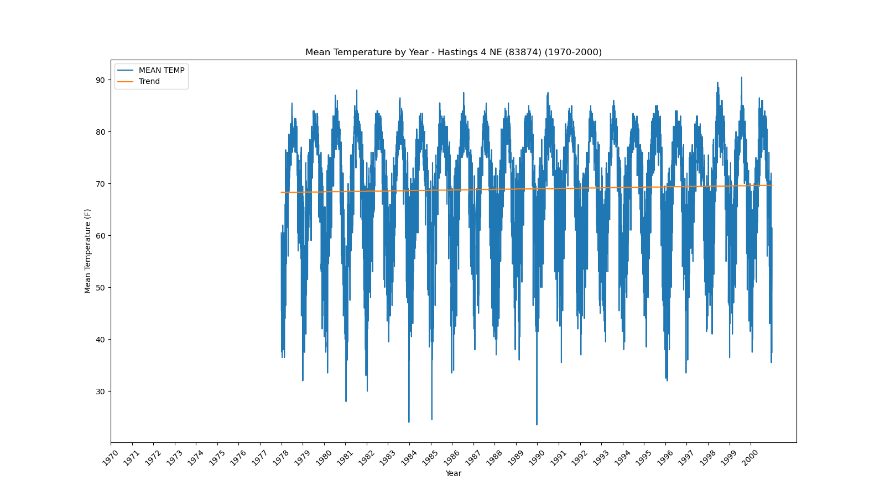</a></div>`)[0];
                popup_82f1b9e619cf1b5538247d30ee0ea5e1.setContent(html_5c1ce772a214e0664606bee6f30b5aa5);
            
        

        marker_de60ecd5eb64e4194d0eb28d366a6aa8.bindPopup(popup_82f1b9e619cf1b5538247d30ee0ea5e1)
        ;

        
    
    
            var marker_fcf9e2ba91e2641da5844ab72a5b6d11 = L.marker(
                [25.86, -80.28],
                {}
            ).addTo(map_912e56754309b14fe6e2504616cc0d85);
        
    
            var icon_4e414ed2f31f0f9121668a9639242373 = L.AwesomeMarkers.icon(
                {"extraClasses": "fa-rotate-0", "icon": "info-sign", "iconColor": "white", "markerColor": "orange", "prefix": "glyphicon"}
            );
            marker_fcf9e2ba91e2641da5844ab72a5b6d11.setIcon(icon_4e414ed2f31f0f9121668a9639242373);
        
    
        var popup_17c505f4543174bc9bd73cc20257b543 = L.popup({"maxWidth": 1000, "minWidth": 500});

        
            
                var html_36d604289ac3d0500ae15302a0167c81 = $(`<div id="html_36d604289ac3d0500ae15302a0167c81" style="width: 100.0%; height: 100.0%;"><b>Hialeah (83909)</b><br>lat: 25.86, lon: -80.28<br><a href='../../static/img/plots/timeseries/meantemp_daily/83909_1970-2000.png' target='_BLANK'></a></div>`)[0];
                popup_17c505f4543174bc9bd73cc20257b543.setContent(html_36d604289ac3d0500ae15302a0167c81);
            
        

        marker_fcf9e2ba91e2641da5844ab72a5b6d11.bindPopup(popup_17c505f4543174bc9bd73cc20257b543)
        ;

        
    
    
            var marker_4fbf379e6fa4ccedaf655079036a5cad = L.marker(
                [29.83, -82.6],
                {}
            ).addTo(map_912e56754309b14fe6e2504616cc0d85);
        
    
            var icon_8053662cb3b1c0503dc1a0caf25db0e1 = L.AwesomeMarkers.icon(
                {"extraClasses": "fa-rotate-0", "icon": "info-sign", "iconColor": "white", "markerColor": "blue", "prefix": "glyphicon"}
            );
            marker_4fbf379e6fa4ccedaf655079036a5cad.setIcon(icon_8053662cb3b1c0503dc1a0caf25db0e1);
        
    
        var popup_ee4644bf9bc0c057e74d7d4d60d2d9db = L.popup({"maxWidth": 1000, "minWidth": 500});

        
            
                var html_4d7a22a027547f055af9730c9c01f6de = $(`<div id="html_4d7a22a027547f055af9730c9c01f6de" style="width: 100.0%; height: 100.0%;"><b>High Springs (83956)</b><br>lat: 29.83, lon: -82.6<br><a href='../../static/img/plots/timeseries/meantemp_daily/83956_1970-2000.png' target='_BLANK'>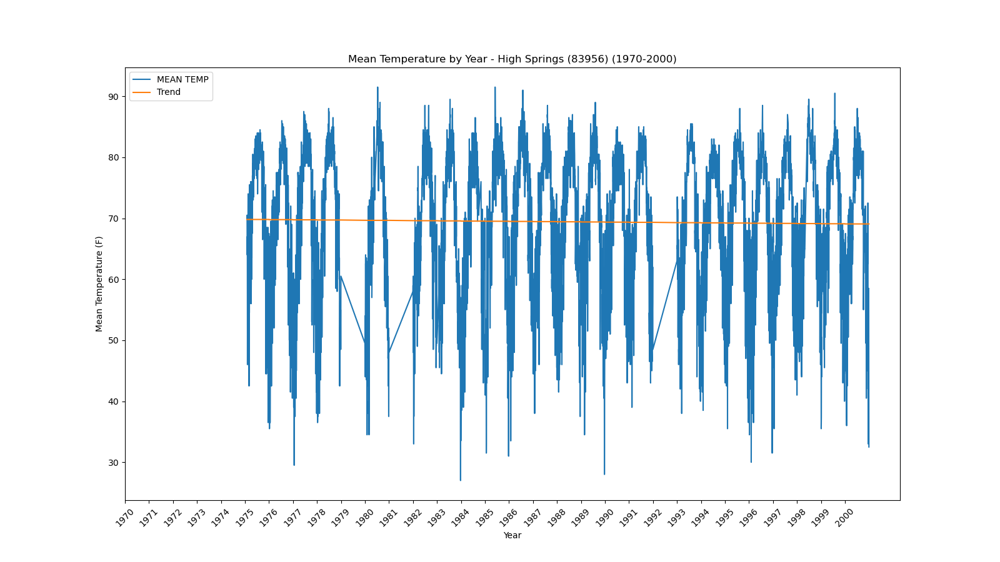</a></div>`)[0];
                popup_ee4644bf9bc0c057e74d7d4d60d2d9db.setContent(html_4d7a22a027547f055af9730c9c01f6de);
            
        

        marker_4fbf379e6fa4ccedaf655079036a5cad.bindPopup(popup_ee4644bf9bc0c057e74d7d4d60d2d9db)
        ;

        
    
    
            var marker_7a5798949f0283c7f23c7f2a26361bcd = L.marker(
                [26.42, -81.42],
                {}
            ).addTo(map_912e56754309b14fe6e2504616cc0d85);
        
    
            var icon_e1b51e5b4a003e2b86142d5518ef9950 = L.AwesomeMarkers.icon(
                {"extraClasses": "fa-rotate-0", "icon": "info-sign", "iconColor": "white", "markerColor": "orange", "prefix": "glyphicon"}
            );
            marker_7a5798949f0283c7f23c7f2a26361bcd.setIcon(icon_e1b51e5b4a003e2b86142d5518ef9950);
        
    
        var popup_950df2aa355e65cd29c119b3f47ff5dc = L.popup({"maxWidth": 1000, "minWidth": 500});

        
            
                var html_25ebdd38b99975b8d0f4a9393de0c55a = $(`<div id="html_25ebdd38b99975b8d0f4a9393de0c55a" style="width: 100.0%; height: 100.0%;"><b>Immokalee (84210)</b><br>lat: 26.42, lon: -81.42<br><a href='../../static/img/plots/timeseries/meantemp_daily/84210_1970-2000.png' target='_BLANK'>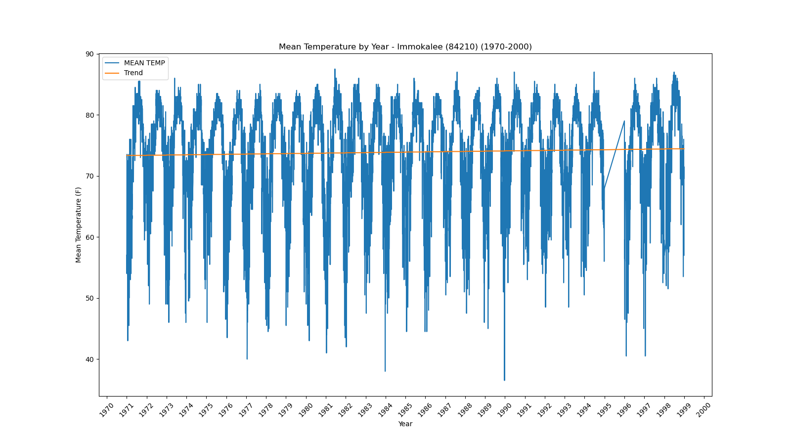</a></div>`)[0];
                popup_950df2aa355e65cd29c119b3f47ff5dc.setContent(html_25ebdd38b99975b8d0f4a9393de0c55a);
            
        

        marker_7a5798949f0283c7f23c7f2a26361bcd.bindPopup(popup_950df2aa355e65cd29c119b3f47ff5dc)
        ;

        
    
    
            var marker_9a7c4fb7fe48a74aa7ca81cd7c97c9b0 = L.marker(
                [28.84, -82.34],
                {}
            ).addTo(map_912e56754309b14fe6e2504616cc0d85);
        
    
            var icon_22065a2b94b0d5e626628d1b10cc2db5 = L.AwesomeMarkers.icon(
                {"extraClasses": "fa-rotate-0", "icon": "info-sign", "iconColor": "white", "markerColor": "blue", "prefix": "glyphicon"}
            );
            marker_9a7c4fb7fe48a74aa7ca81cd7c97c9b0.setIcon(icon_22065a2b94b0d5e626628d1b10cc2db5);
        
    
        var popup_31576a64fe8895b9b0505759de8c7a82 = L.popup({"maxWidth": 1000, "minWidth": 500});

        
            
                var html_fa5bbb1f77dfdf3b1547010cd2ea4636 = $(`<div id="html_fa5bbb1f77dfdf3b1547010cd2ea4636" style="width: 100.0%; height: 100.0%;"><b>Iverness 3 SE (84289)</b><br>lat: 28.84, lon: -82.34<br><a href='../../static/img/plots/timeseries/meantemp_daily/84289_1970-2000.png' target='_BLANK'></a></div>`)[0];
                popup_31576a64fe8895b9b0505759de8c7a82.setContent(html_fa5bbb1f77dfdf3b1547010cd2ea4636);
            
        

        marker_9a7c4fb7fe48a74aa7ca81cd7c97c9b0.bindPopup(popup_31576a64fe8895b9b0505759de8c7a82)
        ;

        
    
    
            var marker_2b4372c8529cd5b31de4a064cf57b907 = L.marker(
                [30.49, -81.68],
                {}
            ).addTo(map_912e56754309b14fe6e2504616cc0d85);
        
    
            var icon_1650882cb1ded3c6e933a026afd446fb = L.AwesomeMarkers.icon(
                {"extraClasses": "fa-rotate-0", "icon": "info-sign", "iconColor": "white", "markerColor": "orange", "prefix": "glyphicon"}
            );
            marker_2b4372c8529cd5b31de4a064cf57b907.setIcon(icon_1650882cb1ded3c6e933a026afd446fb);
        
    
        var popup_9b657e6377f67a7c3c12d8e7bb686d87 = L.popup({"maxWidth": 1000, "minWidth": 500});

        
            
                var html_4492186ab28c4b8f3c66c069f6d8a383 = $(`<div id="html_4492186ab28c4b8f3c66c069f6d8a383" style="width: 100.0%; height: 100.0%;"><b>Jacksonville Intl Airport (84358)</b><br>lat: 30.49, lon: -81.68<br><a href='../../static/img/plots/timeseries/meantemp_daily/84358_1970-2000.png' target='_BLANK'></a></div>`)[0];
                popup_9b657e6377f67a7c3c12d8e7bb686d87.setContent(html_4492186ab28c4b8f3c66c069f6d8a383);
            
        

        marker_2b4372c8529cd5b31de4a064cf57b907.bindPopup(popup_9b657e6377f67a7c3c12d8e7bb686d87)
        ;

        
    
    
            var marker_fefc28c427ced3c27e8db869b2fdbbcc = L.marker(
                [30.28, -81.39],
                {}
            ).addTo(map_912e56754309b14fe6e2504616cc0d85);
        
    
            var icon_3625ca3d56b4cd793f3643763edfe7d0 = L.AwesomeMarkers.icon(
                {"extraClasses": "fa-rotate-0", "icon": "info-sign", "iconColor": "white", "markerColor": "orange", "prefix": "glyphicon"}
            );
            marker_fefc28c427ced3c27e8db869b2fdbbcc.setIcon(icon_3625ca3d56b4cd793f3643763edfe7d0);
        
    
        var popup_efacc7ddd9908458a10811ff3fefc75d = L.popup({"maxWidth": 1000, "minWidth": 500});

        
            
                var html_f61aa5cee4468a70d1474838ab235b8b = $(`<div id="html_f61aa5cee4468a70d1474838ab235b8b" style="width: 100.0%; height: 100.0%;"><b>Jacksonville Beach (84366)</b><br>lat: 30.28, lon: -81.39<br><a href='../../static/img/plots/timeseries/meantemp_daily/84366_1970-2000.png' target='_BLANK'></a></div>`)[0];
                popup_efacc7ddd9908458a10811ff3fefc75d.setContent(html_f61aa5cee4468a70d1474838ab235b8b);
            
        

        marker_fefc28c427ced3c27e8db869b2fdbbcc.bindPopup(popup_efacc7ddd9908458a10811ff3fefc75d)
        ;

        
    
    
            var marker_13ddaae87cd00fd16502449c6702cb08 = L.marker(
                [30.52, -82.94],
                {}
            ).addTo(map_912e56754309b14fe6e2504616cc0d85);
        
    
            var icon_59c3fbf694f16444132f7cd5aa92738e = L.AwesomeMarkers.icon(
                {"extraClasses": "fa-rotate-0", "icon": "info-sign", "iconColor": "white", "markerColor": "blue", "prefix": "glyphicon"}
            );
            marker_13ddaae87cd00fd16502449c6702cb08.setIcon(icon_59c3fbf694f16444132f7cd5aa92738e);
        
    
        var popup_4a7e63e5c8c1a1b40bf879654b76fdee = L.popup({"maxWidth": 1000, "minWidth": 500});

        
            
                var html_18dd2961a55b61904afa0e59890ae795 = $(`<div id="html_18dd2961a55b61904afa0e59890ae795" style="width: 100.0%; height: 100.0%;"><b>Jasper (84394)</b><br>lat: 30.52, lon: -82.94<br><a href='../../static/img/plots/timeseries/meantemp_daily/84394_1970-2000.png' target='_BLANK'></a></div>`)[0];
                popup_4a7e63e5c8c1a1b40bf879654b76fdee.setContent(html_18dd2961a55b61904afa0e59890ae795);
            
        

        marker_13ddaae87cd00fd16502449c6702cb08.bindPopup(popup_4a7e63e5c8c1a1b40bf879654b76fdee)
        ;

        
    
    
            var marker_78a905d10f5b5dddc994a44ce8dfc6ae = L.marker(
                [24.55, -81.76],
                {}
            ).addTo(map_912e56754309b14fe6e2504616cc0d85);
        
    
            var icon_2f1197aa7bd657b4526568a83fef1f26 = L.AwesomeMarkers.icon(
                {"extraClasses": "fa-rotate-0", "icon": "info-sign", "iconColor": "white", "markerColor": "orange", "prefix": "glyphicon"}
            );
            marker_78a905d10f5b5dddc994a44ce8dfc6ae.setIcon(icon_2f1197aa7bd657b4526568a83fef1f26);
        
    
        var popup_ebb7048b09120f5c8fd87895cf5aa2a8 = L.popup({"maxWidth": 1000, "minWidth": 500});

        
            
                var html_48f5d4b95029b775a03f7c1dbfbd0176 = $(`<div id="html_48f5d4b95029b775a03f7c1dbfbd0176" style="width: 100.0%; height: 100.0%;"><b>Key West Intl Airport (84570)</b><br>lat: 24.55, lon: -81.76<br><a href='../../static/img/plots/timeseries/meantemp_daily/84570_1970-2000.png' target='_BLANK'></a></div>`)[0];
                popup_ebb7048b09120f5c8fd87895cf5aa2a8.setContent(html_48f5d4b95029b775a03f7c1dbfbd0176);
            
        

        marker_78a905d10f5b5dddc994a44ce8dfc6ae.bindPopup(popup_ebb7048b09120f5c8fd87895cf5aa2a8)
        ;

        
    
    
            var marker_ce7f5092b08612e17d12910b76e18542 = L.marker(
                [28.29, -81.41],
                {}
            ).addTo(map_912e56754309b14fe6e2504616cc0d85);
        
    
            var icon_ebbc6296bff472046fbcdf68fe5ddbc2 = L.AwesomeMarkers.icon(
                {"extraClasses": "fa-rotate-0", "icon": "info-sign", "iconColor": "white", "markerColor": "orange", "prefix": "glyphicon"}
            );
            marker_ce7f5092b08612e17d12910b76e18542.setIcon(icon_ebbc6296bff472046fbcdf68fe5ddbc2);
        
    
        var popup_5d07dd2a7fc9ddc7cf3e4b45fb7d36a9 = L.popup({"maxWidth": 1000, "minWidth": 500});

        
            
                var html_22bb54e2f93358751e70562e5fd4bd1e = $(`<div id="html_22bb54e2f93358751e70562e5fd4bd1e" style="width: 100.0%; height: 100.0%;"><b>Kissimmee (84625)</b><br>lat: 28.29, lon: -81.41<br><a href='../../static/img/plots/timeseries/meantemp_daily/84625_1970-2000.png' target='_BLANK'></a></div>`)[0];
                popup_5d07dd2a7fc9ddc7cf3e4b45fb7d36a9.setContent(html_22bb54e2f93358751e70562e5fd4bd1e);
            
        

        marker_ce7f5092b08612e17d12910b76e18542.bindPopup(popup_5d07dd2a7fc9ddc7cf3e4b45fb7d36a9)
        ;

        
    
    
            var marker_d2269677ec4e8fd4cb413dbe5fcb95a4 = L.marker(
                [26.71, -81.46],
                {}
            ).addTo(map_912e56754309b14fe6e2504616cc0d85);
        
    
            var icon_5ad164742e0a351b02317210b152cbbf = L.AwesomeMarkers.icon(
                {"extraClasses": "fa-rotate-0", "icon": "info-sign", "iconColor": "white", "markerColor": "orange", "prefix": "glyphicon"}
            );
            marker_d2269677ec4e8fd4cb413dbe5fcb95a4.setIcon(icon_5ad164742e0a351b02317210b152cbbf);
        
    
        var popup_3b0c010982ad7e57e7ed43bd6fa91dfe = L.popup({"maxWidth": 1000, "minWidth": 500});

        
            
                var html_fd1f7642a87e5e140934106ead8f6095 = $(`<div id="html_fd1f7642a87e5e140934106ead8f6095" style="width: 100.0%; height: 100.0%;"><b>La Belle (84662)</b><br>lat: 26.71, lon: -81.46<br><a href='../../static/img/plots/timeseries/meantemp_daily/84662_1970-2000.png' target='_BLANK'></a></div>`)[0];
                popup_3b0c010982ad7e57e7ed43bd6fa91dfe.setContent(html_fd1f7642a87e5e140934106ead8f6095);
            
        

        marker_d2269677ec4e8fd4cb413dbe5fcb95a4.bindPopup(popup_3b0c010982ad7e57e7ed43bd6fa91dfe)
        ;

        
    
    
            var marker_f9e274d9b9224dec8c7cd56087c2ff38 = L.marker(
                [30.12, -82.64],
                {}
            ).addTo(map_912e56754309b14fe6e2504616cc0d85);
        
    
            var icon_fe5d45f7e82b02761fbb59852daf9676 = L.AwesomeMarkers.icon(
                {"extraClasses": "fa-rotate-0", "icon": "info-sign", "iconColor": "white", "markerColor": "orange", "prefix": "glyphicon"}
            );
            marker_f9e274d9b9224dec8c7cd56087c2ff38.setIcon(icon_fe5d45f7e82b02761fbb59852daf9676);
        
    
        var popup_ff4f49bf4602cfe2b31099ff37840fa0 = L.popup({"maxWidth": 1000, "minWidth": 500});

        
            
                var html_b03117fca9eccfcfa6543601f5b02c82 = $(`<div id="html_b03117fca9eccfcfa6543601f5b02c82" style="width: 100.0%; height: 100.0%;"><b>Lake City 2 E (84731)</b><br>lat: 30.12, lon: -82.64<br><a href='../../static/img/plots/timeseries/meantemp_daily/84731_1970-2000.png' target='_BLANK'>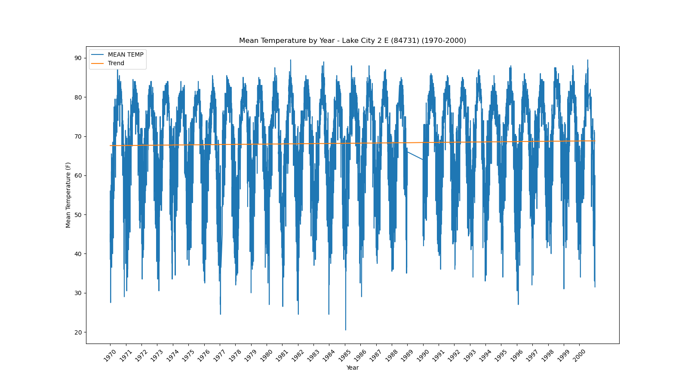</a></div>`)[0];
                popup_ff4f49bf4602cfe2b31099ff37840fa0.setContent(html_b03117fca9eccfcfa6543601f5b02c82);
            
        

        marker_f9e274d9b9224dec8c7cd56087c2ff38.bindPopup(popup_ff4f49bf4602cfe2b31099ff37840fa0)
        ;

        
    
    
            var marker_7c1ebc52caf14c129d030a7ae5455ef3 = L.marker(
                [26.88, -81.78],
                {}
            ).addTo(map_912e56754309b14fe6e2504616cc0d85);
        
    
            var icon_35c366f6ffc59eefb8038e2244c0fabf = L.AwesomeMarkers.icon(
                {"extraClasses": "fa-rotate-0", "icon": "info-sign", "iconColor": "white", "markerColor": "blue", "prefix": "glyphicon"}
            );
            marker_7c1ebc52caf14c129d030a7ae5455ef3.setIcon(icon_35c366f6ffc59eefb8038e2244c0fabf);
        
    
        var popup_650a35797799a3139e0d0895151637e0 = L.popup({"maxWidth": 1000, "minWidth": 500});

        
            
                var html_5e345f91a06d53db6659d3f876bf17eb = $(`<div id="html_5e345f91a06d53db6659d3f876bf17eb" style="width: 100.0%; height: 100.0%;"><b>Lisbon (85076)</b><br>lat: 26.88, lon: -81.78<br><a href='../../static/img/plots/timeseries/meantemp_daily/85076_1970-2000.png' target='_BLANK'></a></div>`)[0];
                popup_650a35797799a3139e0d0895151637e0.setContent(html_5e345f91a06d53db6659d3f876bf17eb);
            
        

        marker_7c1ebc52caf14c129d030a7ae5455ef3.bindPopup(popup_650a35797799a3139e0d0895151637e0)
        ;

        
    
    
            var marker_fe923bb1f83fe60f9d3286ecd2bb5eef = L.marker(
                [30.29, -82.99],
                {}
            ).addTo(map_912e56754309b14fe6e2504616cc0d85);
        
    
            var icon_7161b3613548061729f15a1530d36f17 = L.AwesomeMarkers.icon(
                {"extraClasses": "fa-rotate-0", "icon": "info-sign", "iconColor": "white", "markerColor": "orange", "prefix": "glyphicon"}
            );
            marker_fe923bb1f83fe60f9d3286ecd2bb5eef.setIcon(icon_7161b3613548061729f15a1530d36f17);
        
    
        var popup_f7c6ed09f6a3b4092e32f60509ca68f6 = L.popup({"maxWidth": 1000, "minWidth": 500});

        
            
                var html_9a162ac86066b46fea9213e6597cb352 = $(`<div id="html_9a162ac86066b46fea9213e6597cb352" style="width: 100.0%; height: 100.0%;"><b>Live Oak (85099)</b><br>lat: 30.29, lon: -82.99<br><a href='../../static/img/plots/timeseries/meantemp_daily/85099_1970-2000.png' target='_BLANK'>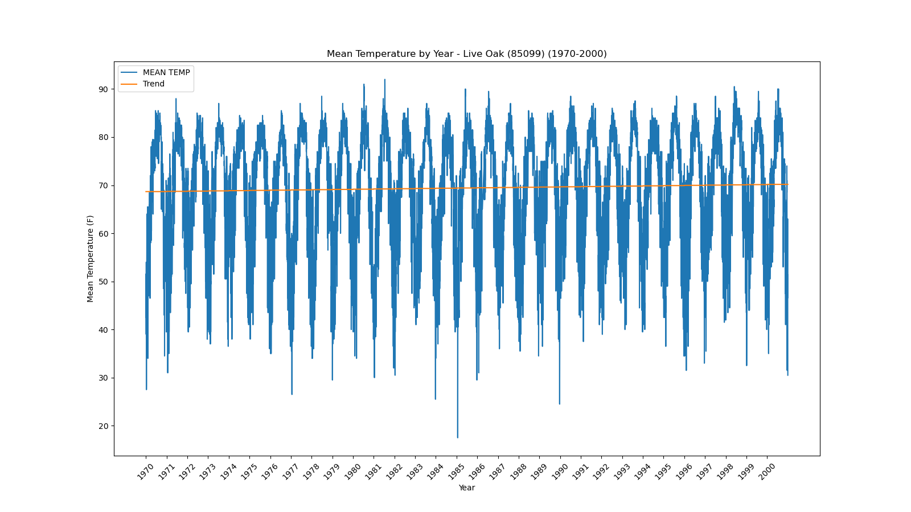</a></div>`)[0];
                popup_f7c6ed09f6a3b4092e32f60509ca68f6.setContent(html_9a162ac86066b46fea9213e6597cb352);
            
        

        marker_fe923bb1f83fe60f9d3286ecd2bb5eef.bindPopup(popup_f7c6ed09f6a3b4092e32f60509ca68f6)
        ;

        
    
    
            var marker_0d1654564f59b93d1bbe9b0a0e351a3f = L.marker(
                [30.48, -83.24],
                {}
            ).addTo(map_912e56754309b14fe6e2504616cc0d85);
        
    
            var icon_4914ca0fe214c0291432392e2e4d2590 = L.AwesomeMarkers.icon(
                {"extraClasses": "fa-rotate-0", "icon": "info-sign", "iconColor": "white", "markerColor": "blue", "prefix": "glyphicon"}
            );
            marker_0d1654564f59b93d1bbe9b0a0e351a3f.setIcon(icon_4914ca0fe214c0291432392e2e4d2590);
        
    
        var popup_8a55c73c244644bda76de9722aa00f32 = L.popup({"maxWidth": 1000, "minWidth": 500});

        
            
                var html_11b1e9388370fd0831543cbef9a3b12f = $(`<div id="html_11b1e9388370fd0831543cbef9a3b12f" style="width: 100.0%; height: 100.0%;"><b>Madison (85275)</b><br>lat: 30.48, lon: -83.24<br><a href='../../static/img/plots/timeseries/meantemp_daily/85275_1970-2000.png' target='_BLANK'></a></div>`)[0];
                popup_8a55c73c244644bda76de9722aa00f32.setContent(html_11b1e9388370fd0831543cbef9a3b12f);
            
        

        marker_0d1654564f59b93d1bbe9b0a0e351a3f.bindPopup(popup_8a55c73c244644bda76de9722aa00f32)
        ;

        
    
    
            var marker_1f6062399ee4a980a29222cf0a61feb3 = L.marker(
                [30.05, -83.18],
                {}
            ).addTo(map_912e56754309b14fe6e2504616cc0d85);
        
    
            var icon_03cd0a5ec8e7cd2e822458a0b7af2b29 = L.AwesomeMarkers.icon(
                {"extraClasses": "fa-rotate-0", "icon": "info-sign", "iconColor": "white", "markerColor": "orange", "prefix": "glyphicon"}
            );
            marker_1f6062399ee4a980a29222cf0a61feb3.setIcon(icon_03cd0a5ec8e7cd2e822458a0b7af2b29);
        
    
        var popup_675ca2dd8ee79c7196fb0ce45aa5488f = L.popup({"maxWidth": 1000, "minWidth": 500});

        
            
                var html_089c66a1d833dc17bc77c6df00e9d46b = $(`<div id="html_089c66a1d833dc17bc77c6df00e9d46b" style="width: 100.0%; height: 100.0%;"><b>Mayo (85539)</b><br>lat: 30.05, lon: -83.18<br><a href='../../static/img/plots/timeseries/meantemp_daily/85539_1970-2000.png' target='_BLANK'></a></div>`)[0];
                popup_675ca2dd8ee79c7196fb0ce45aa5488f.setContent(html_089c66a1d833dc17bc77c6df00e9d46b);
            
        

        marker_1f6062399ee4a980a29222cf0a61feb3.bindPopup(popup_675ca2dd8ee79c7196fb0ce45aa5488f)
        ;

        
    
    
            var marker_433ab5e80d9366d77635178a38bfff53 = L.marker(
                [25.79, -80.14],
                {}
            ).addTo(map_912e56754309b14fe6e2504616cc0d85);
        
    
            var icon_3ac9e614ff351a2baf21b9173c7bb7b7 = L.AwesomeMarkers.icon(
                {"extraClasses": "fa-rotate-0", "icon": "info-sign", "iconColor": "white", "markerColor": "orange", "prefix": "glyphicon"}
            );
            marker_433ab5e80d9366d77635178a38bfff53.setIcon(icon_3ac9e614ff351a2baf21b9173c7bb7b7);
        
    
        var popup_4f8101c9cc7fb854a28c12178c8dbf9a = L.popup({"maxWidth": 1000, "minWidth": 500});

        
            
                var html_324a95808f879b0ceabb3a404a5f1472 = $(`<div id="html_324a95808f879b0ceabb3a404a5f1472" style="width: 100.0%; height: 100.0%;"><b>Miami Beach (85658)</b><br>lat: 25.79, lon: -80.14<br><a href='../../static/img/plots/timeseries/meantemp_daily/85658_1970-2000.png' target='_BLANK'></a></div>`)[0];
                popup_4f8101c9cc7fb854a28c12178c8dbf9a.setContent(html_324a95808f879b0ceabb3a404a5f1472);
            
        

        marker_433ab5e80d9366d77635178a38bfff53.bindPopup(popup_4f8101c9cc7fb854a28c12178c8dbf9a)
        ;

        
    
    
            var marker_128d95079f8d875d3942c4a8a5c8a27f = L.marker(
                [25.79, -80.28],
                {}
            ).addTo(map_912e56754309b14fe6e2504616cc0d85);
        
    
            var icon_bce66bea1c82618499fffc207c719697 = L.AwesomeMarkers.icon(
                {"extraClasses": "fa-rotate-0", "icon": "info-sign", "iconColor": "white", "markerColor": "orange", "prefix": "glyphicon"}
            );
            marker_128d95079f8d875d3942c4a8a5c8a27f.setIcon(icon_bce66bea1c82618499fffc207c719697);
        
    
        var popup_d15e4af35d6db01a189b76b00d20352e = L.popup({"maxWidth": 1000, "minWidth": 500});

        
            
                var html_5a20e66b59f49c527a8c9703dbbd85f1 = $(`<div id="html_5a20e66b59f49c527a8c9703dbbd85f1" style="width: 100.0%; height: 100.0%;"><b>Miami Intl Airport (85663)</b><br>lat: 25.79, lon: -80.28<br><a href='../../static/img/plots/timeseries/meantemp_daily/85663_1970-2000.png' target='_BLANK'></a></div>`)[0];
                popup_d15e4af35d6db01a189b76b00d20352e.setContent(html_5a20e66b59f49c527a8c9703dbbd85f1);
            
        

        marker_128d95079f8d875d3942c4a8a5c8a27f.bindPopup(popup_d15e4af35d6db01a189b76b00d20352e)
        ;

        
    
    
            var marker_a98a30499f200e79116b40652a946b43 = L.marker(
                [30.29, -83.46],
                {}
            ).addTo(map_912e56754309b14fe6e2504616cc0d85);
        
    
            var icon_248c7d5c964fd11f1a34f66db49b7507 = L.AwesomeMarkers.icon(
                {"extraClasses": "fa-rotate-0", "icon": "info-sign", "iconColor": "white", "markerColor": "orange", "prefix": "glyphicon"}
            );
            marker_a98a30499f200e79116b40652a946b43.setIcon(icon_248c7d5c964fd11f1a34f66db49b7507);
        
    
        var popup_c94353b94bf9344105550dd040e67f0f = L.popup({"maxWidth": 1000, "minWidth": 500});

        
            
                var html_ee172993954fb05c981ec921e3a1ee26 = $(`<div id="html_ee172993954fb05c981ec921e3a1ee26" style="width: 100.0%; height: 100.0%;"><b>Monticello 5 SE (85879)</b><br>lat: 30.29, lon: -83.46<br><a href='../../static/img/plots/timeseries/meantemp_daily/85879_1970-2000.png' target='_BLANK'>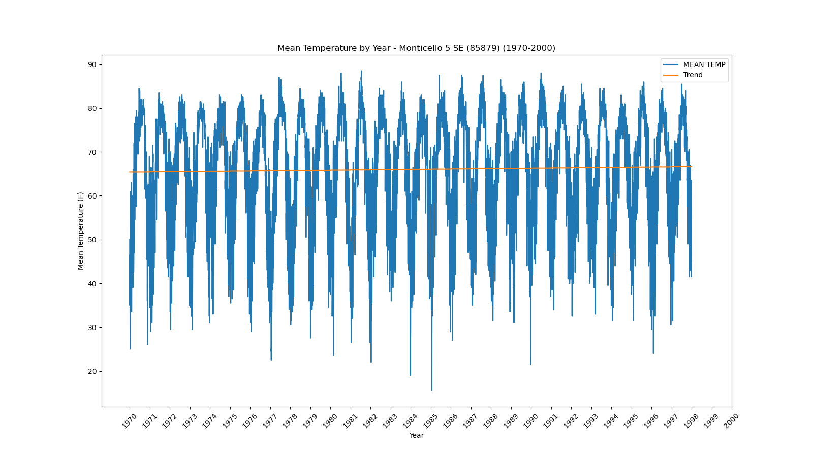</a></div>`)[0];
                popup_c94353b94bf9344105550dd040e67f0f.setContent(html_ee172993954fb05c981ec921e3a1ee26);
            
        

        marker_a98a30499f200e79116b40652a946b43.bindPopup(popup_c94353b94bf9344105550dd040e67f0f)
        ;

        
    
    
            var marker_09e87f4c41120359806109edfdc41f48 = L.marker(
                [26.84, -81.09],
                {}
            ).addTo(map_912e56754309b14fe6e2504616cc0d85);
        
    
            var icon_6247d0cd9f5c3eee83679de27fa42a13 = L.AwesomeMarkers.icon(
                {"extraClasses": "fa-rotate-0", "icon": "info-sign", "iconColor": "white", "markerColor": "orange", "prefix": "glyphicon"}
            );
            marker_09e87f4c41120359806109edfdc41f48.setIcon(icon_6247d0cd9f5c3eee83679de27fa42a13);
        
    
        var popup_846a3e690e80c09509e6f9e415113930 = L.popup({"maxWidth": 1000, "minWidth": 500});

        
            
                var html_45714555874e0fb3dcb4697dd20b4412 = $(`<div id="html_45714555874e0fb3dcb4697dd20b4412" style="width: 100.0%; height: 100.0%;"><b>Moore Haven Lock 1 (85895)</b><br>lat: 26.84, lon: -81.09<br><a href='../../static/img/plots/timeseries/meantemp_daily/85895_1970-2000.png' target='_BLANK'>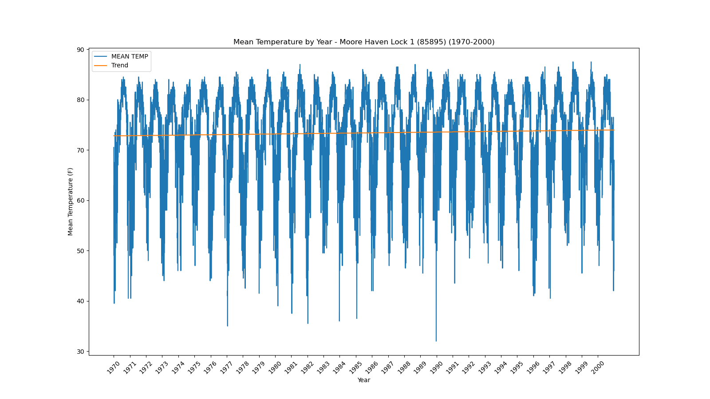</a></div>`)[0];
                popup_846a3e690e80c09509e6f9e415113930.setContent(html_45714555874e0fb3dcb4697dd20b4412);
            
        

        marker_09e87f4c41120359806109edfdc41f48.bindPopup(popup_846a3e690e80c09509e6f9e415113930)
        ;

        
    
    
            var marker_8c4879290a48379ad1127fd897bd7340 = L.marker(
                [27.93, -81.59],
                {}
            ).addTo(map_912e56754309b14fe6e2504616cc0d85);
        
    
            var icon_6b81657ec086136da308b8608d181d05 = L.AwesomeMarkers.icon(
                {"extraClasses": "fa-rotate-0", "icon": "info-sign", "iconColor": "white", "markerColor": "blue", "prefix": "glyphicon"}
            );
            marker_8c4879290a48379ad1127fd897bd7340.setIcon(icon_6b81657ec086136da308b8608d181d05);
        
    
        var popup_3bc9d37a114e96ae711b0669f9f91c1c = L.popup({"maxWidth": 1000, "minWidth": 500});

        
            
                var html_8c6014c55a1a2d133125fedd3809f509 = $(`<div id="html_8c6014c55a1a2d133125fedd3809f509" style="width: 100.0%; height: 100.0%;"><b>Mountain Lake (85973)</b><br>lat: 27.93, lon: -81.59<br><a href='../../static/img/plots/timeseries/meantemp_daily/85973_1970-2000.png' target='_BLANK'>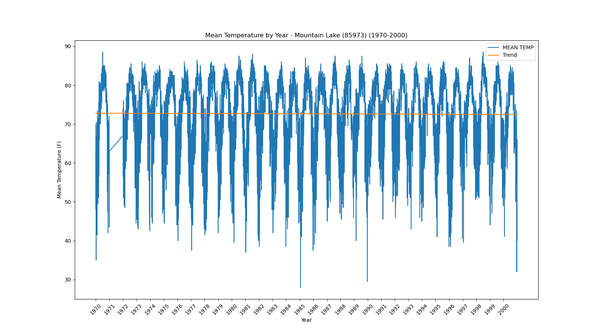</a></div>`)[0];
                popup_3bc9d37a114e96ae711b0669f9f91c1c.setContent(html_8c6014c55a1a2d133125fedd3809f509);
            
        

        marker_8c4879290a48379ad1127fd897bd7340.bindPopup(popup_3bc9d37a114e96ae711b0669f9f91c1c)
        ;

        
    
    
            var marker_b223ae5e1c32e164f5f181f8c85eb622 = L.marker(
                [27.2, -82.25],
                {}
            ).addTo(map_912e56754309b14fe6e2504616cc0d85);
        
    
            var icon_5bd93fbb5816d8ea68c426f227dc308d = L.AwesomeMarkers.icon(
                {"extraClasses": "fa-rotate-0", "icon": "info-sign", "iconColor": "white", "markerColor": "orange", "prefix": "glyphicon"}
            );
            marker_b223ae5e1c32e164f5f181f8c85eb622.setIcon(icon_5bd93fbb5816d8ea68c426f227dc308d);
        
    
        var popup_b9a4402eb37c9c601011b6b0ffbd4051 = L.popup({"maxWidth": 1000, "minWidth": 500});

        
            
                var html_31c42eb1d14f51d85208e24cc1ee8535 = $(`<div id="html_31c42eb1d14f51d85208e24cc1ee8535" style="width: 100.0%; height: 100.0%;"><b>Myakka River State Park (86065)</b><br>lat: 27.2, lon: -82.25<br><a href='../../static/img/plots/timeseries/meantemp_daily/86065_1970-2000.png' target='_BLANK'></a></div>`)[0];
                popup_b9a4402eb37c9c601011b6b0ffbd4051.setContent(html_31c42eb1d14f51d85208e24cc1ee8535);
            
        

        marker_b223ae5e1c32e164f5f181f8c85eb622.bindPopup(popup_b9a4402eb37c9c601011b6b0ffbd4051)
        ;

        
    
    
            var marker_17b46333d3bf47e9ecc414af1013094b = L.marker(
                [26.15, -81.77],
                {}
            ).addTo(map_912e56754309b14fe6e2504616cc0d85);
        
    
            var icon_49489141e4323ce2f525829e62d63bf0 = L.AwesomeMarkers.icon(
                {"extraClasses": "fa-rotate-0", "icon": "info-sign", "iconColor": "white", "markerColor": "orange", "prefix": "glyphicon"}
            );
            marker_17b46333d3bf47e9ecc414af1013094b.setIcon(icon_49489141e4323ce2f525829e62d63bf0);
        
    
        var popup_b30c2afff4a4fbc5932104a785526876 = L.popup({"maxWidth": 1000, "minWidth": 500});

        
            
                var html_6a7a630538de01845b597fd9e999b6a2 = $(`<div id="html_6a7a630538de01845b597fd9e999b6a2" style="width: 100.0%; height: 100.0%;"><b>Naples (86078)</b><br>lat: 26.15, lon: -81.77<br><a href='../../static/img/plots/timeseries/meantemp_daily/86078_1970-2000.png' target='_BLANK'></a></div>`)[0];
                popup_b30c2afff4a4fbc5932104a785526876.setContent(html_6a7a630538de01845b597fd9e999b6a2);
            
        

        marker_17b46333d3bf47e9ecc414af1013094b.bindPopup(popup_b30c2afff4a4fbc5932104a785526876)
        ;

        
    
    
            var marker_3821213743c70c537fb6e3fb4c7cdde6 = L.marker(
                [30.52, -86.48],
                {}
            ).addTo(map_912e56754309b14fe6e2504616cc0d85);
        
    
            var icon_10d8f1f91998f2b8f6faf6cc3a0281f9 = L.AwesomeMarkers.icon(
                {"extraClasses": "fa-rotate-0", "icon": "info-sign", "iconColor": "white", "markerColor": "blue", "prefix": "glyphicon"}
            );
            marker_3821213743c70c537fb6e3fb4c7cdde6.setIcon(icon_10d8f1f91998f2b8f6faf6cc3a0281f9);
        
    
        var popup_f3f68e14326088742756cb0784ec8739 = L.popup({"maxWidth": 1000, "minWidth": 500});

        
            
                var html_dd5bb79e51f53407f8b9eea36b41fd50 = $(`<div id="html_dd5bb79e51f53407f8b9eea36b41fd50" style="width: 100.0%; height: 100.0%;"><b>Niceville (86240)</b><br>lat: 30.52, lon: -86.48<br><a href='../../static/img/plots/timeseries/meantemp_daily/86240_1970-2000.png' target='_BLANK'>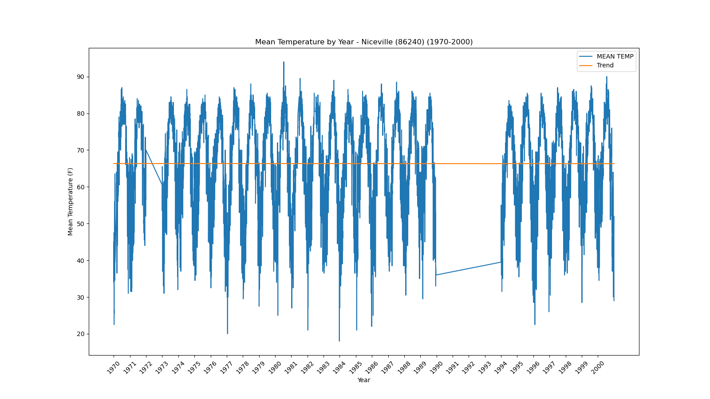</a></div>`)[0];
                popup_f3f68e14326088742756cb0784ec8739.setContent(html_dd5bb79e51f53407f8b9eea36b41fd50);
            
        

        marker_3821213743c70c537fb6e3fb4c7cdde6.bindPopup(popup_f3f68e14326088742756cb0784ec8739)
        ;

        
    
    
            var marker_691491c2de0ffcb6804b45e8e9d4b795 = L.marker(
                [25.86, -81.03],
                {}
            ).addTo(map_912e56754309b14fe6e2504616cc0d85);
        
    
            var icon_d89aacbed5e8401cafa4d5125c1ab099 = L.AwesomeMarkers.icon(
                {"extraClasses": "fa-rotate-0", "icon": "info-sign", "iconColor": "white", "markerColor": "orange", "prefix": "glyphicon"}
            );
            marker_691491c2de0ffcb6804b45e8e9d4b795.setIcon(icon_d89aacbed5e8401cafa4d5125c1ab099);
        
    
        var popup_2ceaf2f29be3494f29c1d851c8ac5df3 = L.popup({"maxWidth": 1000, "minWidth": 500});

        
            
                var html_7a678dcd200c0951d88635d086e92d6a = $(`<div id="html_7a678dcd200c0951d88635d086e92d6a" style="width: 100.0%; height: 100.0%;"><b>Oasis Ranger Station (86406)</b><br>lat: 25.86, lon: -81.03<br><a href='../../static/img/plots/timeseries/meantemp_daily/86406_1970-2000.png' target='_BLANK'>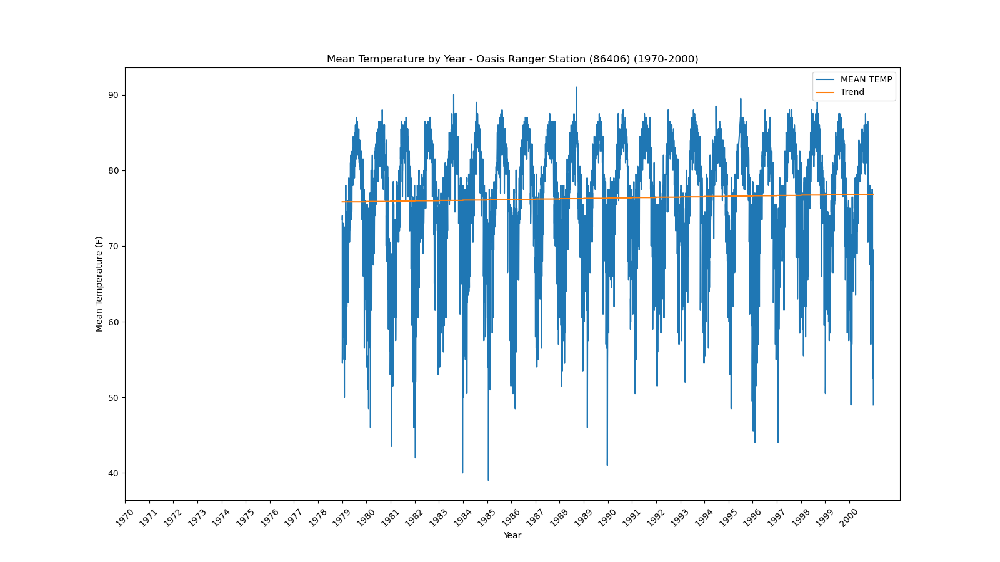</a></div>`)[0];
                popup_2ceaf2f29be3494f29c1d851c8ac5df3.setContent(html_7a678dcd200c0951d88635d086e92d6a);
            
        

        marker_691491c2de0ffcb6804b45e8e9d4b795.bindPopup(popup_2ceaf2f29be3494f29c1d851c8ac5df3)
        ;

        
    
    
            var marker_4925e33793f6aa972c813c36012032b5 = L.marker(
                [29.19, -82.14],
                {}
            ).addTo(map_912e56754309b14fe6e2504616cc0d85);
        
    
            var icon_f4eb4ee33dcd1bd29e7463682868f213 = L.AwesomeMarkers.icon(
                {"extraClasses": "fa-rotate-0", "icon": "info-sign", "iconColor": "white", "markerColor": "orange", "prefix": "glyphicon"}
            );
            marker_4925e33793f6aa972c813c36012032b5.setIcon(icon_f4eb4ee33dcd1bd29e7463682868f213);
        
    
        var popup_357e06420328664833beed5e3e264887 = L.popup({"maxWidth": 1000, "minWidth": 500});

        
            
                var html_25036a14753c058d63db82b06eea761b = $(`<div id="html_25036a14753c058d63db82b06eea761b" style="width: 100.0%; height: 100.0%;"><b>Ocala (86414)</b><br>lat: 29.19, lon: -82.14<br><a href='../../static/img/plots/timeseries/meantemp_daily/86414_1970-2000.png' target='_BLANK'></a></div>`)[0];
                popup_357e06420328664833beed5e3e264887.setContent(html_25036a14753c058d63db82b06eea761b);
            
        

        marker_4925e33793f6aa972c813c36012032b5.bindPopup(popup_357e06420328664833beed5e3e264887)
        ;

        
    
    
            var marker_ad2187c4b5f9482352b5d493a45aa996 = L.marker(
                [27.24, -80.83],
                {}
            ).addTo(map_912e56754309b14fe6e2504616cc0d85);
        
    
            var icon_669158324fdbcecd1cc292b63d503b85 = L.AwesomeMarkers.icon(
                {"extraClasses": "fa-rotate-0", "icon": "info-sign", "iconColor": "white", "markerColor": "orange", "prefix": "glyphicon"}
            );
            marker_ad2187c4b5f9482352b5d493a45aa996.setIcon(icon_669158324fdbcecd1cc292b63d503b85);
        
    
        var popup_a1be71eac7ff2bc84077d8acad58e57c = L.popup({"maxWidth": 1000, "minWidth": 500});

        
            
                var html_19010c55a9ba3483dde342c7f962face = $(`<div id="html_19010c55a9ba3483dde342c7f962face" style="width: 100.0%; height: 100.0%;"><b>Okeechobee (86485)</b><br>lat: 27.24, lon: -80.83<br><a href='../../static/img/plots/timeseries/meantemp_daily/86485_1970-2000.png' target='_BLANK'></a></div>`)[0];
                popup_a1be71eac7ff2bc84077d8acad58e57c.setContent(html_19010c55a9ba3483dde342c7f962face);
            
        

        marker_ad2187c4b5f9482352b5d493a45aa996.bindPopup(popup_a1be71eac7ff2bc84077d8acad58e57c)
        ;

        
    
    
            var marker_1b92fbd0fbfb51e24d779b00d8d0ba13 = L.marker(
                [28.43, -81.31],
                {}
            ).addTo(map_912e56754309b14fe6e2504616cc0d85);
        
    
            var icon_b7d68dd42d64179b2db6060624f02cfe = L.AwesomeMarkers.icon(
                {"extraClasses": "fa-rotate-0", "icon": "info-sign", "iconColor": "white", "markerColor": "orange", "prefix": "glyphicon"}
            );
            marker_1b92fbd0fbfb51e24d779b00d8d0ba13.setIcon(icon_b7d68dd42d64179b2db6060624f02cfe);
        
    
        var popup_973fb46e8e911a38bf9f1bec8ff8eeb2 = L.popup({"maxWidth": 1000, "minWidth": 500});

        
            
                var html_fa513cea5e2d6c37e9b869fd92d8b74f = $(`<div id="html_fa513cea5e2d6c37e9b869fd92d8b74f" style="width: 100.0%; height: 100.0%;"><b>Orlando Intl Airport (86628)</b><br>lat: 28.43, lon: -81.31<br><a href='../../static/img/plots/timeseries/meantemp_daily/86628_1970-2000.png' target='_BLANK'></a></div>`)[0];
                popup_973fb46e8e911a38bf9f1bec8ff8eeb2.setContent(html_fa513cea5e2d6c37e9b869fd92d8b74f);
            
        

        marker_1b92fbd0fbfb51e24d779b00d8d0ba13.bindPopup(popup_973fb46e8e911a38bf9f1bec8ff8eeb2)
        ;

        
    
    
            var marker_80c6544b415d88ee28d37ca95253992c = L.marker(
                [30.18, -85.67],
                {}
            ).addTo(map_912e56754309b14fe6e2504616cc0d85);
        
    
            var icon_6ecd45adc5d1c5d721e9a5bcc391bd53 = L.AwesomeMarkers.icon(
                {"extraClasses": "fa-rotate-0", "icon": "info-sign", "iconColor": "white", "markerColor": "blue", "prefix": "glyphicon"}
            );
            marker_80c6544b415d88ee28d37ca95253992c.setIcon(icon_6ecd45adc5d1c5d721e9a5bcc391bd53);
        
    
        var popup_f1eb5419e60543d5f40399aee06c9540 = L.popup({"maxWidth": 1000, "minWidth": 500});

        
            
                var html_0575a208cb2df1ee6675b8e9f9daab04 = $(`<div id="html_0575a208cb2df1ee6675b8e9f9daab04" style="width: 100.0%; height: 100.0%;"><b>Panama City 5N (86842)</b><br>lat: 30.18, lon: -85.67<br><a href='../../static/img/plots/timeseries/meantemp_daily/86842_1970-2000.png' target='_BLANK'></a></div>`)[0];
                popup_f1eb5419e60543d5f40399aee06c9540.setContent(html_0575a208cb2df1ee6675b8e9f9daab04);
            
        

        marker_80c6544b415d88ee28d37ca95253992c.bindPopup(popup_f1eb5419e60543d5f40399aee06c9540)
        ;

        
    
    
            var marker_fa4a371fcacbd8f10fa0f2b82580a661 = L.marker(
                [27.59, -82.43],
                {}
            ).addTo(map_912e56754309b14fe6e2504616cc0d85);
        
    
            var icon_429b511cc9ba51b5c2de61b6546f6e1c = L.AwesomeMarkers.icon(
                {"extraClasses": "fa-rotate-0", "icon": "info-sign", "iconColor": "white", "markerColor": "blue", "prefix": "glyphicon"}
            );
            marker_fa4a371fcacbd8f10fa0f2b82580a661.setIcon(icon_429b511cc9ba51b5c2de61b6546f6e1c);
        
    
        var popup_610a5f87d776a2958e323ea4c7e3f79b = L.popup({"maxWidth": 1000, "minWidth": 500});

        
            
                var html_67ca20680f82bd6daec9bf7eee85f0f7 = $(`<div id="html_67ca20680f82bd6daec9bf7eee85f0f7" style="width: 100.0%; height: 100.0%;"><b>Parrish (86880)</b><br>lat: 27.59, lon: -82.43<br><a href='../../static/img/plots/timeseries/meantemp_daily/86880_1970-2000.png' target='_BLANK'></a></div>`)[0];
                popup_610a5f87d776a2958e323ea4c7e3f79b.setContent(html_67ca20680f82bd6daec9bf7eee85f0f7);
            
        

        marker_fa4a371fcacbd8f10fa0f2b82580a661.bindPopup(popup_610a5f87d776a2958e323ea4c7e3f79b)
        ;

        
    
    
            var marker_569444345c441eef4b0a396bb4f2e046 = L.marker(
                [30.48, -87.19],
                {}
            ).addTo(map_912e56754309b14fe6e2504616cc0d85);
        
    
            var icon_093dac49b697ecddcc393fddb5b56fe3 = L.AwesomeMarkers.icon(
                {"extraClasses": "fa-rotate-0", "icon": "info-sign", "iconColor": "white", "markerColor": "orange", "prefix": "glyphicon"}
            );
            marker_569444345c441eef4b0a396bb4f2e046.setIcon(icon_093dac49b697ecddcc393fddb5b56fe3);
        
    
        var popup_f971f95e1582d19e2c5dfcce954e7f64 = L.popup({"maxWidth": 1000, "minWidth": 500});

        
            
                var html_f825f16aa98bbbf803fd29e9bd7b646f = $(`<div id="html_f825f16aa98bbbf803fd29e9bd7b646f" style="width: 100.0%; height: 100.0%;"><b>Pensacola Regional Airport (86997)</b><br>lat: 30.48, lon: -87.19<br><a href='../../static/img/plots/timeseries/meantemp_daily/86997_1970-2000.png' target='_BLANK'></a></div>`)[0];
                popup_f971f95e1582d19e2c5dfcce954e7f64.setContent(html_f825f16aa98bbbf803fd29e9bd7b646f);
            
        

        marker_569444345c441eef4b0a396bb4f2e046.bindPopup(popup_f971f95e1582d19e2c5dfcce954e7f64)
        ;

        
    
    
            var marker_a9213357bf11bdd3d340e495454b6438 = L.marker(
                [25.59, -80.36],
                {}
            ).addTo(map_912e56754309b14fe6e2504616cc0d85);
        
    
            var icon_cf826bb276e5bc8ef6a32868e71251ee = L.AwesomeMarkers.icon(
                {"extraClasses": "fa-rotate-0", "icon": "info-sign", "iconColor": "white", "markerColor": "blue", "prefix": "glyphicon"}
            );
            marker_a9213357bf11bdd3d340e495454b6438.setIcon(icon_cf826bb276e5bc8ef6a32868e71251ee);
        
    
        var popup_b7ac5b72d32eeaaf96dd3107f5a2dc30 = L.popup({"maxWidth": 1000, "minWidth": 500});

        
            
                var html_8ccc4d187b63aea21fa8dd6ed1361964 = $(`<div id="html_8ccc4d187b63aea21fa8dd6ed1361964" style="width: 100.0%; height: 100.0%;"><b>Perrine 4W (87020)</b><br>lat: 25.59, lon: -80.36<br><a href='../../static/img/plots/timeseries/meantemp_daily/87020_1970-2000.png' target='_BLANK'></a></div>`)[0];
                popup_b7ac5b72d32eeaaf96dd3107f5a2dc30.setContent(html_8ccc4d187b63aea21fa8dd6ed1361964);
            
        

        marker_a9213357bf11bdd3d340e495454b6438.bindPopup(popup_b7ac5b72d32eeaaf96dd3107f5a2dc30)
        ;

        
    
    
            var marker_2f0674b4bf9ea5d0fa4eb237e6c0553c = L.marker(
                [30.11, -83.58],
                {}
            ).addTo(map_912e56754309b14fe6e2504616cc0d85);
        
    
            var icon_669dee8e54251bf155bf578d59e6d26e = L.AwesomeMarkers.icon(
                {"extraClasses": "fa-rotate-0", "icon": "info-sign", "iconColor": "white", "markerColor": "blue", "prefix": "glyphicon"}
            );
            marker_2f0674b4bf9ea5d0fa4eb237e6c0553c.setIcon(icon_669dee8e54251bf155bf578d59e6d26e);
        
    
        var popup_0ca71936594a682c7af8db7253aba8fc = L.popup({"maxWidth": 1000, "minWidth": 500});

        
            
                var html_d77e3eeb6813365a94b459dd4ee1b164 = $(`<div id="html_d77e3eeb6813365a94b459dd4ee1b164" style="width: 100.0%; height: 100.0%;"><b>Perry (87025)</b><br>lat: 30.11, lon: -83.58<br><a href='../../static/img/plots/timeseries/meantemp_daily/87025_1970-2000.png' target='_BLANK'></a></div>`)[0];
                popup_0ca71936594a682c7af8db7253aba8fc.setContent(html_d77e3eeb6813365a94b459dd4ee1b164);
            
        

        marker_2f0674b4bf9ea5d0fa4eb237e6c0553c.bindPopup(popup_0ca71936594a682c7af8db7253aba8fc)
        ;

        
    
    
            var marker_a382484e02a2001ae89b20559155932c = L.marker(
                [28.01, -82.16],
                {}
            ).addTo(map_912e56754309b14fe6e2504616cc0d85);
        
    
            var icon_c582e51b8300754bf59dc1ab83232fea = L.AwesomeMarkers.icon(
                {"extraClasses": "fa-rotate-0", "icon": "info-sign", "iconColor": "white", "markerColor": "orange", "prefix": "glyphicon"}
            );
            marker_a382484e02a2001ae89b20559155932c.setIcon(icon_c582e51b8300754bf59dc1ab83232fea);
        
    
        var popup_ae5bbd63384f63a892636b4c224c2b64 = L.popup({"maxWidth": 1000, "minWidth": 500});

        
            
                var html_b59ff996bbbda397fd5e7915b5bea357 = $(`<div id="html_b59ff996bbbda397fd5e7915b5bea357" style="width: 100.0%; height: 100.0%;"><b>Plant City (87205)</b><br>lat: 28.01, lon: -82.16<br><a href='../../static/img/plots/timeseries/meantemp_daily/87205_1970-2000.png' target='_BLANK'></a></div>`)[0];
                popup_ae5bbd63384f63a892636b4c224c2b64.setContent(html_b59ff996bbbda397fd5e7915b5bea357);
            
        

        marker_a382484e02a2001ae89b20559155932c.bindPopup(popup_ae5bbd63384f63a892636b4c224c2b64)
        ;

        
    
    
            var marker_ab9e7d729e3bc5739b3dbd58433e41ca = L.marker(
                [26.92, -82.0],
                {}
            ).addTo(map_912e56754309b14fe6e2504616cc0d85);
        
    
            var icon_0dfd863c3fd30c12a60422f7524879da = L.AwesomeMarkers.icon(
                {"extraClasses": "fa-rotate-0", "icon": "info-sign", "iconColor": "white", "markerColor": "orange", "prefix": "glyphicon"}
            );
            marker_ab9e7d729e3bc5739b3dbd58433e41ca.setIcon(icon_0dfd863c3fd30c12a60422f7524879da);
        
    
        var popup_4246c774a111b53a4f89222d89dfd25e = L.popup({"maxWidth": 1000, "minWidth": 500});

        
            
                var html_e433ccdb4b5f9f43b866e3714e895c98 = $(`<div id="html_e433ccdb4b5f9f43b866e3714e895c98" style="width: 100.0%; height: 100.0%;"><b>Punta Gorda 4 ESE (87397)</b><br>lat: 26.92, lon: -82<br><a href='../../static/img/plots/timeseries/meantemp_daily/87397_1970-2000.png' target='_BLANK'></a></div>`)[0];
                popup_4246c774a111b53a4f89222d89dfd25e.setContent(html_e433ccdb4b5f9f43b866e3714e895c98);
            
        

        marker_ab9e7d729e3bc5739b3dbd58433e41ca.bindPopup(popup_4246c774a111b53a4f89222d89dfd25e)
        ;

        
    
    
            var marker_d790fabf3a658703bba23c76bc827af0 = L.marker(
                [30.59, -84.59],
                {}
            ).addTo(map_912e56754309b14fe6e2504616cc0d85);
        
    
            var icon_0304b412e741e25f912a65d8e4005e50 = L.AwesomeMarkers.icon(
                {"extraClasses": "fa-rotate-0", "icon": "info-sign", "iconColor": "white", "markerColor": "orange", "prefix": "glyphicon"}
            );
            marker_d790fabf3a658703bba23c76bc827af0.setIcon(icon_0304b412e741e25f912a65d8e4005e50);
        
    
        var popup_638fe86e0be31845cbcf3bcb36de3d5c = L.popup({"maxWidth": 1000, "minWidth": 500});

        
            
                var html_429a96da8e7e2ca04b8c159aeb6beb04 = $(`<div id="html_429a96da8e7e2ca04b8c159aeb6beb04" style="width: 100.0%; height: 100.0%;"><b>Quincy 3 SSW (87429)</b><br>lat: 30.59, lon: -84.59<br><a href='../../static/img/plots/timeseries/meantemp_daily/87429_1970-2000.png' target='_BLANK'></a></div>`)[0];
                popup_638fe86e0be31845cbcf3bcb36de3d5c.setContent(html_429a96da8e7e2ca04b8c159aeb6beb04);
            
        

        marker_d790fabf3a658703bba23c76bc827af0.bindPopup(popup_638fe86e0be31845cbcf3bcb36de3d5c)
        ;

        
    
    
            var marker_a8a47f231728358f265aa8b449be4acd = L.marker(
                [25.38, -80.61],
                {}
            ).addTo(map_912e56754309b14fe6e2504616cc0d85);
        
    
            var icon_ac97cb889bc32d8ea122d7bb8e74b070 = L.AwesomeMarkers.icon(
                {"extraClasses": "fa-rotate-0", "icon": "info-sign", "iconColor": "white", "markerColor": "orange", "prefix": "glyphicon"}
            );
            marker_a8a47f231728358f265aa8b449be4acd.setIcon(icon_ac97cb889bc32d8ea122d7bb8e74b070);
        
    
        var popup_0c2e0abff02c8efa6bb7433b1fe4885f = L.popup({"maxWidth": 1000, "minWidth": 500});

        
            
                var html_e124214eec42f9c8a56227eceb5bb525 = $(`<div id="html_e124214eec42f9c8a56227eceb5bb525" style="width: 100.0%; height: 100.0%;"><b>Royal Palm Ranger Station (87760)</b><br>lat: 25.38, lon: -80.61<br><a href='../../static/img/plots/timeseries/meantemp_daily/87760_1970-2000.png' target='_BLANK'></a></div>`)[0];
                popup_0c2e0abff02c8efa6bb7433b1fe4885f.setContent(html_e124214eec42f9c8a56227eceb5bb525);
            
        

        marker_a8a47f231728358f265aa8b449be4acd.bindPopup(popup_0c2e0abff02c8efa6bb7433b1fe4885f)
        ;

        
    
    
            var marker_2aa2f244ecd0cba6668e0562ab1bd0c1 = L.marker(
                [29.89, -81.29],
                {}
            ).addTo(map_912e56754309b14fe6e2504616cc0d85);
        
    
            var icon_90f421ae47842fb54c296afba14e63ed = L.AwesomeMarkers.icon(
                {"extraClasses": "fa-rotate-0", "icon": "info-sign", "iconColor": "white", "markerColor": "orange", "prefix": "glyphicon"}
            );
            marker_2aa2f244ecd0cba6668e0562ab1bd0c1.setIcon(icon_90f421ae47842fb54c296afba14e63ed);
        
    
        var popup_fedb08f9ea0c3a92e690b9ab1b419972 = L.popup({"maxWidth": 1000, "minWidth": 500});

        
            
                var html_dc9b47bba574e1e843834a2210259336 = $(`<div id="html_dc9b47bba574e1e843834a2210259336" style="width: 100.0%; height: 100.0%;"><b>St. Augustine Lighthouse (87826)</b><br>lat: 29.89, lon: -81.29<br><a href='../../static/img/plots/timeseries/meantemp_daily/87826_1970-2000.png' target='_BLANK'>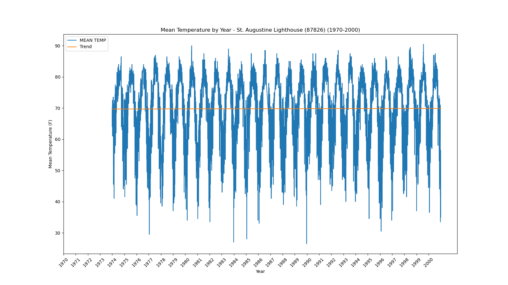</a></div>`)[0];
                popup_fedb08f9ea0c3a92e690b9ab1b419972.setContent(html_dc9b47bba574e1e843834a2210259336);
            
        

        marker_2aa2f244ecd0cba6668e0562ab1bd0c1.bindPopup(popup_fedb08f9ea0c3a92e690b9ab1b419972)
        ;

        
    
    
            var marker_5983132a4051807d58acacffc7c6c4b6 = L.marker(
                [28.34, -82.26],
                {}
            ).addTo(map_912e56754309b14fe6e2504616cc0d85);
        
    
            var icon_8d313b030d25b4fd463d14833ee928ef = L.AwesomeMarkers.icon(
                {"extraClasses": "fa-rotate-0", "icon": "info-sign", "iconColor": "white", "markerColor": "orange", "prefix": "glyphicon"}
            );
            marker_5983132a4051807d58acacffc7c6c4b6.setIcon(icon_8d313b030d25b4fd463d14833ee928ef);
        
    
        var popup_1b42bc4a8771a7047b5c9862948275e4 = L.popup({"maxWidth": 1000, "minWidth": 500});

        
            
                var html_1c8bf2f842d9a9aa283ec9782650ddd6 = $(`<div id="html_1c8bf2f842d9a9aa283ec9782650ddd6" style="width: 100.0%; height: 100.0%;"><b>Sain Leo (87851)</b><br>lat: 28.34, lon: -82.26<br><a href='../../static/img/plots/timeseries/meantemp_daily/87851_1970-2000.png' target='_BLANK'></a></div>`)[0];
                popup_1b42bc4a8771a7047b5c9862948275e4.setContent(html_1c8bf2f842d9a9aa283ec9782650ddd6);
            
        

        marker_5983132a4051807d58acacffc7c6c4b6.bindPopup(popup_1b42bc4a8771a7047b5c9862948275e4)
        ;

        
    
    
            var marker_51fcab7d254a24a9df0168722c6d4060 = L.marker(
                [28.78, -81.24],
                {}
            ).addTo(map_912e56754309b14fe6e2504616cc0d85);
        
    
            var icon_94e3b0d23079cca939ab8f5d52a2869e = L.AwesomeMarkers.icon(
                {"extraClasses": "fa-rotate-0", "icon": "info-sign", "iconColor": "white", "markerColor": "orange", "prefix": "glyphicon"}
            );
            marker_51fcab7d254a24a9df0168722c6d4060.setIcon(icon_94e3b0d23079cca939ab8f5d52a2869e);
        
    
        var popup_9de9a280132ce4ef9dafa13157e2c4f1 = L.popup({"maxWidth": 1000, "minWidth": 500});

        
            
                var html_197e6f6064c67a114034be1b772fd5c0 = $(`<div id="html_197e6f6064c67a114034be1b772fd5c0" style="width: 100.0%; height: 100.0%;"><b>Sanford (87982)</b><br>lat: 28.78, lon: -81.24<br><a href='../../static/img/plots/timeseries/meantemp_daily/87982_1970-2000.png' target='_BLANK'></a></div>`)[0];
                popup_9de9a280132ce4ef9dafa13157e2c4f1.setContent(html_197e6f6064c67a114034be1b772fd5c0);
            
        

        marker_51fcab7d254a24a9df0168722c6d4060.bindPopup(popup_9de9a280132ce4ef9dafa13157e2c4f1)
        ;

        
    
    
            var marker_04bce971c8216b5ccc47b6af87437746 = L.marker(
                [27.2, -80.25],
                {}
            ).addTo(map_912e56754309b14fe6e2504616cc0d85);
        
    
            var icon_1bcd1a4c33b9dabc1787785e0c3ed78b = L.AwesomeMarkers.icon(
                {"extraClasses": "fa-rotate-0", "icon": "info-sign", "iconColor": "white", "markerColor": "orange", "prefix": "glyphicon"}
            );
            marker_04bce971c8216b5ccc47b6af87437746.setIcon(icon_1bcd1a4c33b9dabc1787785e0c3ed78b);
        
    
        var popup_d600de8c6b1fdb0947cf7e72430fb7c7 = L.popup({"maxWidth": 1000, "minWidth": 500});

        
            
                var html_4a3308e94ed4f0bd17ccc261a726e83e = $(`<div id="html_4a3308e94ed4f0bd17ccc261a726e83e" style="width: 100.0%; height: 100.0%;"><b>Stuart (88620)</b><br>lat: 27.2, lon: -80.25<br><a href='../../static/img/plots/timeseries/meantemp_daily/88620_1970-2000.png' target='_BLANK'>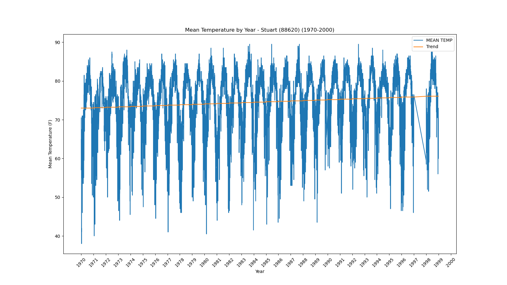</a></div>`)[0];
                popup_d600de8c6b1fdb0947cf7e72430fb7c7.setContent(html_4a3308e94ed4f0bd17ccc261a726e83e);
            
        

        marker_04bce971c8216b5ccc47b6af87437746.bindPopup(popup_d600de8c6b1fdb0947cf7e72430fb7c7)
        ;

        
    
    
            var marker_0014cf8a470270e52364809a92a0bdf6 = L.marker(
                [30.39, -84.35],
                {}
            ).addTo(map_912e56754309b14fe6e2504616cc0d85);
        
    
            var icon_dc056add4e4914c4d9ea46689da9f942 = L.AwesomeMarkers.icon(
                {"extraClasses": "fa-rotate-0", "icon": "info-sign", "iconColor": "white", "markerColor": "orange", "prefix": "glyphicon"}
            );
            marker_0014cf8a470270e52364809a92a0bdf6.setIcon(icon_dc056add4e4914c4d9ea46689da9f942);
        
    
        var popup_d149c3ac4accd0377e7c7de7b63db931 = L.popup({"maxWidth": 1000, "minWidth": 500});

        
            
                var html_ac300a8d9d7a4277b699d5188dd7b98d = $(`<div id="html_ac300a8d9d7a4277b699d5188dd7b98d" style="width: 100.0%; height: 100.0%;"><b>Tallahassee Regional Airport (88758)</b><br>lat: 30.39, lon: -84.35<br><a href='../../static/img/plots/timeseries/meantemp_daily/88758_1970-2000.png' target='_BLANK'></a></div>`)[0];
                popup_d149c3ac4accd0377e7c7de7b63db931.setContent(html_ac300a8d9d7a4277b699d5188dd7b98d);
            
        

        marker_0014cf8a470270e52364809a92a0bdf6.bindPopup(popup_d149c3ac4accd0377e7c7de7b63db931)
        ;

        
    
    
            var marker_31195a1b84096b50f9c5b19766de53d3 = L.marker(
                [27.98, -82.53],
                {}
            ).addTo(map_912e56754309b14fe6e2504616cc0d85);
        
    
            var icon_de6238c6a9155c86d4b03db11f936f14 = L.AwesomeMarkers.icon(
                {"extraClasses": "fa-rotate-0", "icon": "info-sign", "iconColor": "white", "markerColor": "orange", "prefix": "glyphicon"}
            );
            marker_31195a1b84096b50f9c5b19766de53d3.setIcon(icon_de6238c6a9155c86d4b03db11f936f14);
        
    
        var popup_b8889b626064b7d28269b5fc0ebba610 = L.popup({"maxWidth": 1000, "minWidth": 500});

        
            
                var html_648d099d8728cbf8ca82f068d412ad62 = $(`<div id="html_648d099d8728cbf8ca82f068d412ad62" style="width: 100.0%; height: 100.0%;"><b>Tampa Intl Airport (88788)</b><br>lat: 27.98, lon: -82.53<br><a href='../../static/img/plots/timeseries/meantemp_daily/88788_1970-2000.png' target='_BLANK'></a></div>`)[0];
                popup_b8889b626064b7d28269b5fc0ebba610.setContent(html_648d099d8728cbf8ca82f068d412ad62);
            
        

        marker_31195a1b84096b50f9c5b19766de53d3.bindPopup(popup_b8889b626064b7d28269b5fc0ebba610)
        ;

        
    
    
            var marker_cd3461e36725e0f8ed7236464c4f63a1 = L.marker(
                [28.15, -82.75],
                {}
            ).addTo(map_912e56754309b14fe6e2504616cc0d85);
        
    
            var icon_669d173ed31a44c077cd64a65b0163a9 = L.AwesomeMarkers.icon(
                {"extraClasses": "fa-rotate-0", "icon": "info-sign", "iconColor": "white", "markerColor": "orange", "prefix": "glyphicon"}
            );
            marker_cd3461e36725e0f8ed7236464c4f63a1.setIcon(icon_669d173ed31a44c077cd64a65b0163a9);
        
    
        var popup_736b8a83f84c2144f99a16da72b09270 = L.popup({"maxWidth": 1000, "minWidth": 500});

        
            
                var html_1d242dd7d11ce91117017526541d3d69 = $(`<div id="html_1d242dd7d11ce91117017526541d3d69" style="width: 100.0%; height: 100.0%;"><b>Tarpon Springs Sewage Plant (88824)</b><br>lat: 28.15, lon: -82.75<br><a href='../../static/img/plots/timeseries/meantemp_daily/88824_1970-2000.png' target='_BLANK'>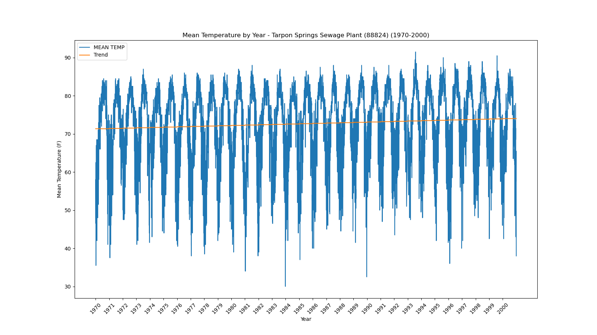</a></div>`)[0];
                popup_736b8a83f84c2144f99a16da72b09270.setContent(html_1d242dd7d11ce91117017526541d3d69);
            
        

        marker_cd3461e36725e0f8ed7236464c4f63a1.bindPopup(popup_736b8a83f84c2144f99a16da72b09270)
        ;

        
    
    
            var marker_0d558d22831ab2ccfe0123e1e915833b = L.marker(
                [28.61, -80.82],
                {}
            ).addTo(map_912e56754309b14fe6e2504616cc0d85);
        
    
            var icon_04df70f8a1cb13eedc952fd6ac1344c2 = L.AwesomeMarkers.icon(
                {"extraClasses": "fa-rotate-0", "icon": "info-sign", "iconColor": "white", "markerColor": "orange", "prefix": "glyphicon"}
            );
            marker_0d558d22831ab2ccfe0123e1e915833b.setIcon(icon_04df70f8a1cb13eedc952fd6ac1344c2);
        
    
        var popup_007fec7d7b7eeb5492badf6d016a1727 = L.popup({"maxWidth": 1000, "minWidth": 500});

        
            
                var html_5e50464461b78a6b1e0b0642b521c168 = $(`<div id="html_5e50464461b78a6b1e0b0642b521c168" style="width: 100.0%; height: 100.0%;"><b>Titusville (88942)</b><br>lat: 28.61, lon: -80.82<br><a href='../../static/img/plots/timeseries/meantemp_daily/88942_1970-2000.png' target='_BLANK'></a></div>`)[0];
                popup_007fec7d7b7eeb5492badf6d016a1727.setContent(html_5e50464461b78a6b1e0b0642b521c168);
            
        

        marker_0d558d22831ab2ccfe0123e1e915833b.bindPopup(popup_007fec7d7b7eeb5492badf6d016a1727)
        ;

        
    
    
            var marker_9590c8dda095e0ef0beea979b3bedb96 = L.marker(
                [29.41, -82.82],
                {}
            ).addTo(map_912e56754309b14fe6e2504616cc0d85);
        
    
            var icon_9594d009221f725b1f0b2eee4a5e48d3 = L.AwesomeMarkers.icon(
                {"extraClasses": "fa-rotate-0", "icon": "info-sign", "iconColor": "white", "markerColor": "orange", "prefix": "glyphicon"}
            );
            marker_9590c8dda095e0ef0beea979b3bedb96.setIcon(icon_9594d009221f725b1f0b2eee4a5e48d3);
        
    
        var popup_ad12cab1f372a7641c0285c0b2a8616a = L.popup({"maxWidth": 1000, "minWidth": 500});

        
            
                var html_1c9ab516652336f9466ee3ecaf564cf6 = $(`<div id="html_1c9ab516652336f9466ee3ecaf564cf6" style="width: 100.0%; height: 100.0%;"><b>Usher Lookout Tower (89120)</b><br>lat: 29.41, lon: -82.82<br><a href='../../static/img/plots/timeseries/meantemp_daily/89120_1970-2000.png' target='_BLANK'></a></div>`)[0];
                popup_ad12cab1f372a7641c0285c0b2a8616a.setContent(html_1c9ab516652336f9466ee3ecaf564cf6);
            
        

        marker_9590c8dda095e0ef0beea979b3bedb96.bindPopup(popup_ad12cab1f372a7641c0285c0b2a8616a)
        ;

        
    
    
            var marker_b453fd52a38264968127c9573e3a7402 = L.marker(
                [27.1, -82.43],
                {}
            ).addTo(map_912e56754309b14fe6e2504616cc0d85);
        
    
            var icon_4acdfb75ffe28ea13259bab502d3d596 = L.AwesomeMarkers.icon(
                {"extraClasses": "fa-rotate-0", "icon": "info-sign", "iconColor": "white", "markerColor": "orange", "prefix": "glyphicon"}
            );
            marker_b453fd52a38264968127c9573e3a7402.setIcon(icon_4acdfb75ffe28ea13259bab502d3d596);
        
    
        var popup_55ff6977eb982e10d434287b99c0a3b4 = L.popup({"maxWidth": 1000, "minWidth": 500});

        
            
                var html_4a6024c586485f9c0f35f84f2acba8b2 = $(`<div id="html_4a6024c586485f9c0f35f84f2acba8b2" style="width: 100.0%; height: 100.0%;"><b>Venice (89176)</b><br>lat: 27.1, lon: -82.43<br><a href='../../static/img/plots/timeseries/meantemp_daily/89176_1970-2000.png' target='_BLANK'></a></div>`)[0];
                popup_55ff6977eb982e10d434287b99c0a3b4.setContent(html_4a6024c586485f9c0f35f84f2acba8b2);
            
        

        marker_b453fd52a38264968127c9573e3a7402.bindPopup(popup_55ff6977eb982e10d434287b99c0a3b4)
        ;

        
    
    
            var marker_e5f4b641d10c4dc12232f34a72eff807 = L.marker(
                [27.65, -80.42],
                {}
            ).addTo(map_912e56754309b14fe6e2504616cc0d85);
        
    
            var icon_c231544d90788cf74b1b259842a97321 = L.AwesomeMarkers.icon(
                {"extraClasses": "fa-rotate-0", "icon": "info-sign", "iconColor": "white", "markerColor": "orange", "prefix": "glyphicon"}
            );
            marker_e5f4b641d10c4dc12232f34a72eff807.setIcon(icon_c231544d90788cf74b1b259842a97321);
        
    
        var popup_056a80f665b34708f3d404b9354a49ab = L.popup({"maxWidth": 1000, "minWidth": 500});

        
            
                var html_933025a6c2bebd3da77effd0b8cd40c0 = $(`<div id="html_933025a6c2bebd3da77effd0b8cd40c0" style="width: 100.0%; height: 100.0%;"><b>Vero Beach Intl Airport (89214)</b><br>lat: 27.65, lon: -80.42<br><a href='../../static/img/plots/timeseries/meantemp_daily/89214_1970-2000.png' target='_BLANK'></a></div>`)[0];
                popup_056a80f665b34708f3d404b9354a49ab.setContent(html_933025a6c2bebd3da77effd0b8cd40c0);
            
        

        marker_e5f4b641d10c4dc12232f34a72eff807.bindPopup(popup_056a80f665b34708f3d404b9354a49ab)
        ;

        
    
    
            var marker_974039b39abe47d4f6689eec5a489391 = L.marker(
                [27.66, -80.37],
                {}
            ).addTo(map_912e56754309b14fe6e2504616cc0d85);
        
    
            var icon_e92732f90809282815de3cad6548f723 = L.AwesomeMarkers.icon(
                {"extraClasses": "fa-rotate-0", "icon": "info-sign", "iconColor": "white", "markerColor": "orange", "prefix": "glyphicon"}
            );
            marker_974039b39abe47d4f6689eec5a489391.setIcon(icon_e92732f90809282815de3cad6548f723);
        
    
        var popup_59d04ffe2f4a7e7078d6d637bbad3cd7 = L.popup({"maxWidth": 1000, "minWidth": 500});

        
            
                var html_83440ee103e979e766ec7bec81280643 = $(`<div id="html_83440ee103e979e766ec7bec81280643" style="width: 100.0%; height: 100.0%;"><b>Vero Beach 4 SE (89219)</b><br>lat: 27.66, lon: -80.37<br><a href='../../static/img/plots/timeseries/meantemp_daily/89219_1970-2000.png' target='_BLANK'></a></div>`)[0];
                popup_59d04ffe2f4a7e7078d6d637bbad3cd7.setContent(html_83440ee103e979e766ec7bec81280643);
            
        

        marker_974039b39abe47d4f6689eec5a489391.bindPopup(popup_59d04ffe2f4a7e7078d6d637bbad3cd7)
        ;

        
    
    
            var marker_38180621ccbb756e64c839c3223d55c3 = L.marker(
                [27.51, -81.89],
                {}
            ).addTo(map_912e56754309b14fe6e2504616cc0d85);
        
    
            var icon_884fc4cf748b490ea50710daa4fe0936 = L.AwesomeMarkers.icon(
                {"extraClasses": "fa-rotate-0", "icon": "info-sign", "iconColor": "white", "markerColor": "blue", "prefix": "glyphicon"}
            );
            marker_38180621ccbb756e64c839c3223d55c3.setIcon(icon_884fc4cf748b490ea50710daa4fe0936);
        
    
        var popup_2c2e1e0b8c2fc25c946dcf5e8481d9db = L.popup({"maxWidth": 1000, "minWidth": 500});

        
            
                var html_89316fc1eedf7ce6a1ef4e428d3fb9e3 = $(`<div id="html_89316fc1eedf7ce6a1ef4e428d3fb9e3" style="width: 100.0%; height: 100.0%;"><b>Wauchula (89401)</b><br>lat: 27.51, lon: -81.89<br><a href='../../static/img/plots/timeseries/meantemp_daily/89401_1970-2000.png' target='_BLANK'>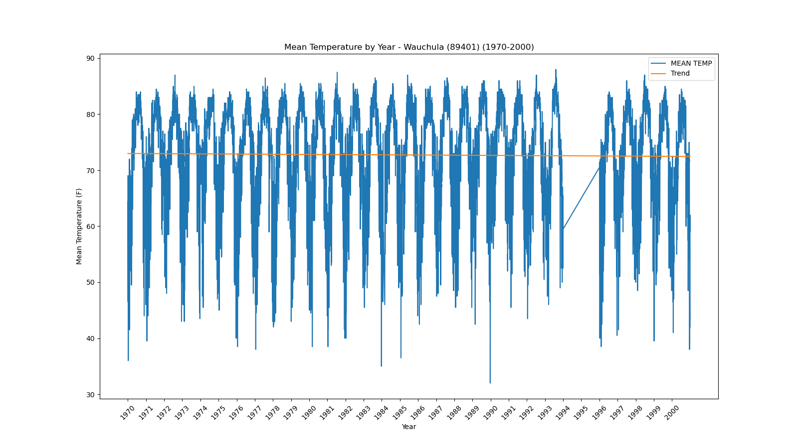</a></div>`)[0];
                popup_2c2e1e0b8c2fc25c946dcf5e8481d9db.setContent(html_89316fc1eedf7ce6a1ef4e428d3fb9e3);
            
        

        marker_38180621ccbb756e64c839c3223d55c3.bindPopup(popup_2c2e1e0b8c2fc25c946dcf5e8481d9db)
        ;

        
    
    
            var marker_958d911c1f6cb2427ab4980934ab67f6 = L.marker(
                [28.53, -82.58],
                {}
            ).addTo(map_912e56754309b14fe6e2504616cc0d85);
        
    
            var icon_635969eab142c803e6b8c3997d1bdab2 = L.AwesomeMarkers.icon(
                {"extraClasses": "fa-rotate-0", "icon": "info-sign", "iconColor": "white", "markerColor": "orange", "prefix": "glyphicon"}
            );
            marker_958d911c1f6cb2427ab4980934ab67f6.setIcon(icon_635969eab142c803e6b8c3997d1bdab2);
        
    
        var popup_bf041da18badba82ad2dee7819857896 = L.popup({"maxWidth": 1000, "minWidth": 500});

        
            
                var html_a8d592009b6822e3aa6d743c737c40a5 = $(`<div id="html_a8d592009b6822e3aa6d743c737c40a5" style="width: 100.0%; height: 100.0%;"><b>Weeki Wachee (89430)</b><br>lat: 28.53, lon: -82.58<br><a href='../../static/img/plots/timeseries/meantemp_daily/89430_1970-2000.png' target='_BLANK'>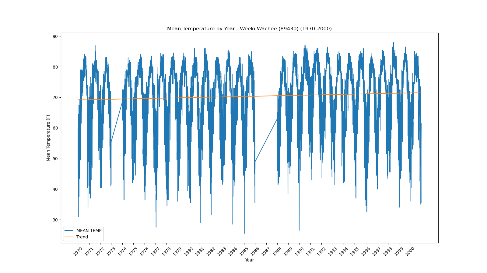</a></div>`)[0];
                popup_bf041da18badba82ad2dee7819857896.setContent(html_a8d592009b6822e3aa6d743c737c40a5);
            
        

        marker_958d911c1f6cb2427ab4980934ab67f6.bindPopup(popup_bf041da18badba82ad2dee7819857896)
        ;

        
    
    
            var marker_f57f5d448a1ea62c20077e075ffc0b78 = L.marker(
                [26.69, -80.09],
                {}
            ).addTo(map_912e56754309b14fe6e2504616cc0d85);
        
    
            var icon_c6d650c2a23ce95bd63d992ea8347fb2 = L.AwesomeMarkers.icon(
                {"extraClasses": "fa-rotate-0", "icon": "info-sign", "iconColor": "white", "markerColor": "orange", "prefix": "glyphicon"}
            );
            marker_f57f5d448a1ea62c20077e075ffc0b78.setIcon(icon_c6d650c2a23ce95bd63d992ea8347fb2);
        
    
        var popup_81fe939d3d0a3d10a0d09435b4fd3cba = L.popup({"maxWidth": 1000, "minWidth": 500});

        
            
                var html_1d523ff6a767ea33daf5bc64dabdce04 = $(`<div id="html_1d523ff6a767ea33daf5bc64dabdce04" style="width: 100.0%; height: 100.0%;"><b>West Palm Beach Intl Airport (89525)</b><br>lat: 26.69, lon: -80.09<br><a href='../../static/img/plots/timeseries/meantemp_daily/89525_1970-2000.png' target='_BLANK'></a></div>`)[0];
                popup_81fe939d3d0a3d10a0d09435b4fd3cba.setContent(html_1d523ff6a767ea33daf5bc64dabdce04);
            
        

        marker_f57f5d448a1ea62c20077e075ffc0b78.bindPopup(popup_81fe939d3d0a3d10a0d09435b4fd3cba)
        ;

        
    
    
            var marker_a4ffc0b3219152d77625d067328014fa = L.marker(
                [30.11, -85.2],
                {}
            ).addTo(map_912e56754309b14fe6e2504616cc0d85);
        
    
            var icon_ca6ba216c380e020015130c12c7b2fdc = L.AwesomeMarkers.icon(
                {"extraClasses": "fa-rotate-0", "icon": "info-sign", "iconColor": "white", "markerColor": "blue", "prefix": "glyphicon"}
            );
            marker_a4ffc0b3219152d77625d067328014fa.setIcon(icon_ca6ba216c380e020015130c12c7b2fdc);
        
    
        var popup_274eb2ef6787ee57113914e22cf5830d = L.popup({"maxWidth": 1000, "minWidth": 500});

        
            
                var html_766761c0d6cab44701b7b2d1a3d57066 = $(`<div id="html_766761c0d6cab44701b7b2d1a3d57066" style="width: 100.0%; height: 100.0%;"><b>Wewahitchka (89566)</b><br>lat: 30.11, lon: -85.2<br><a href='../../static/img/plots/timeseries/meantemp_daily/89566_1970-2000.png' target='_BLANK'></a></div>`)[0];
                popup_274eb2ef6787ee57113914e22cf5830d.setContent(html_766761c0d6cab44701b7b2d1a3d57066);
            
        

        marker_a4ffc0b3219152d77625d067328014fa.bindPopup(popup_274eb2ef6787ee57113914e22cf5830d)
        ;

        
    
</script>
</html>